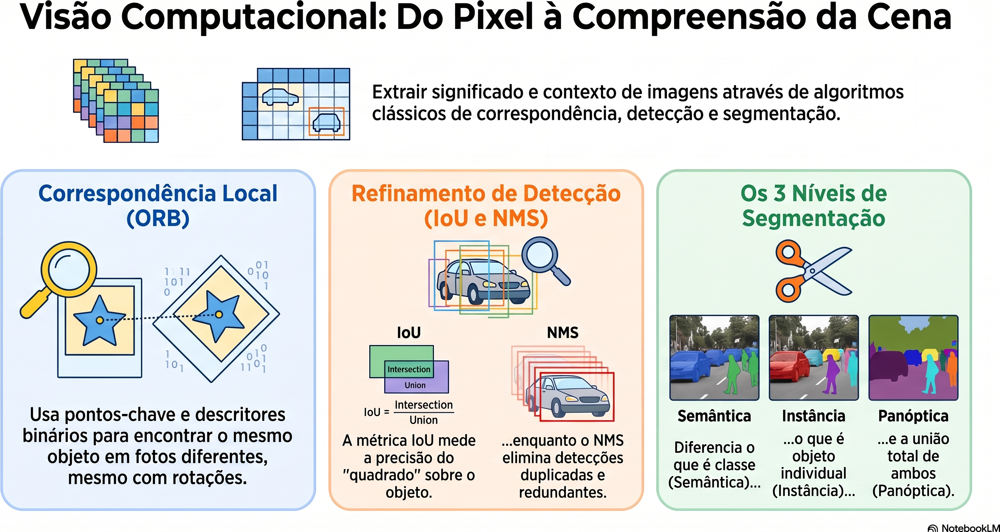
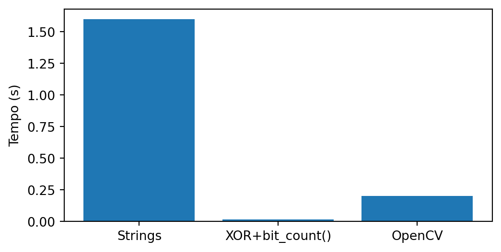
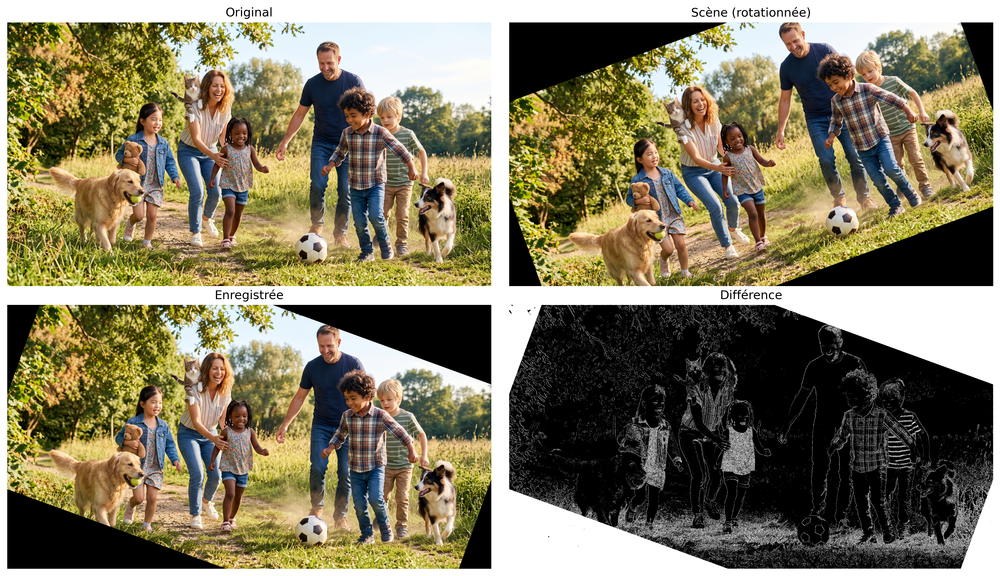
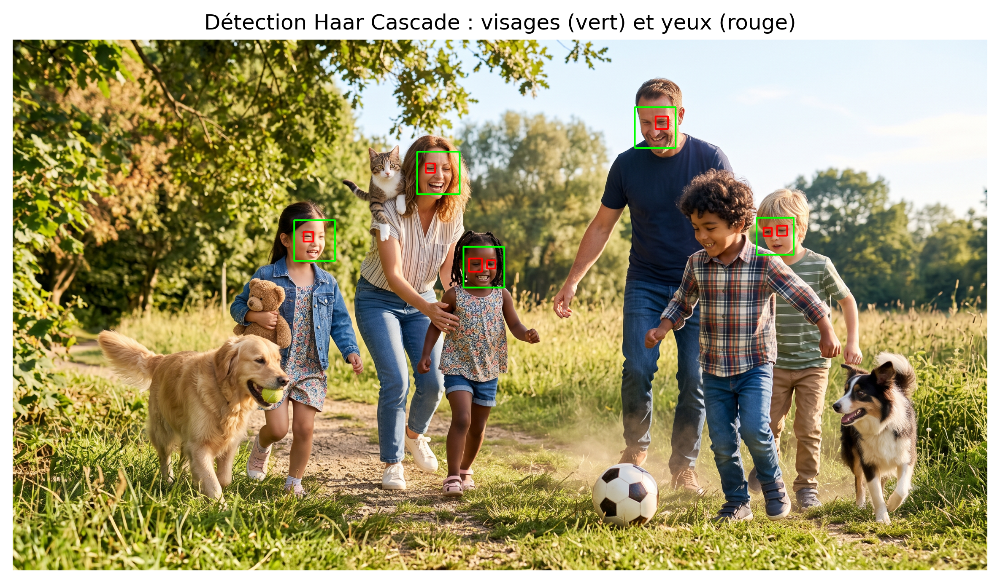
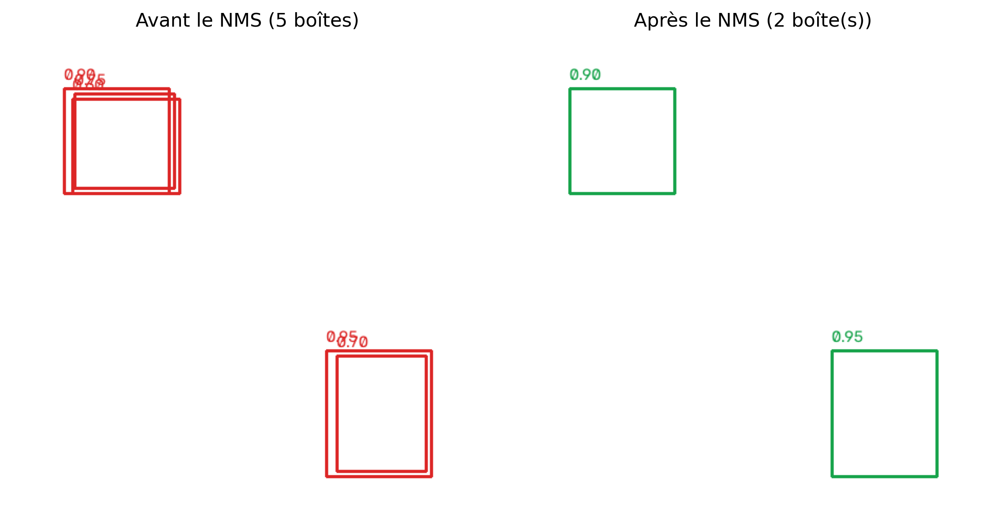
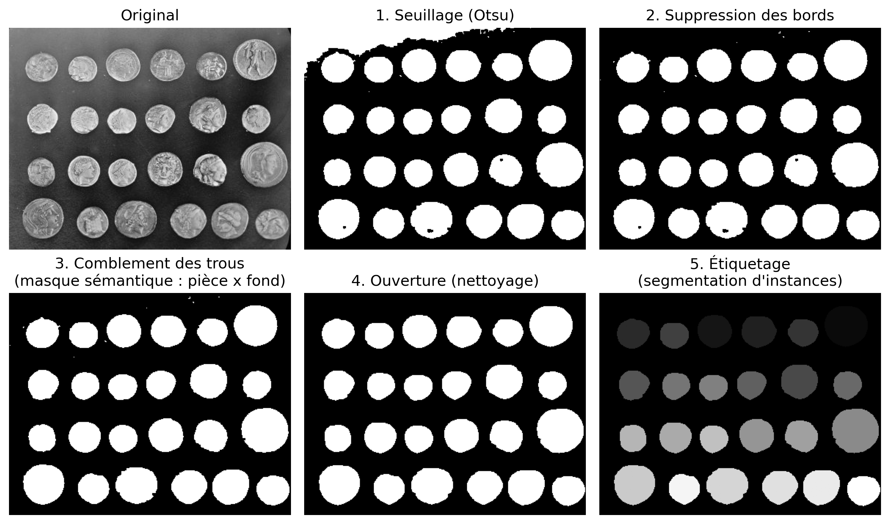

8Compreendendo Cenas: Correspondência de Características, Detecção e Segmentação
No Capítulo 7, estudou-se como representar imagens por meio de descritores e utilizar essas representações para tarefas de classificação. Neste capítulo, o problema é ampliado: além de reconhecer padrões, torna-se necessário estabelecer correspondências entre diferentes imagens, localizar automaticamente objetos de interesse e interpretar a organização espacial de uma cena.
Esses problemas constituem algumas das principais tarefas da Visão Computacional e representam uma etapa natural após a classificação de imagens. Para resolvê-los, serão apresentados métodos clássicos de correspondência de características, detecção de objetos e segmentação de imagens, bem como uma visão geral das abordagens modernas baseadas em Deep Learning, preparando a transição para o Capítulo 9.
8.1 Objetivos do Capítulo
Ao concluir este capítulo, o estudante deverá ser capaz de:
Estabelecer correspondências entre imagens utilizando detectores e descritores locais, estimando transformações geométricas por meio de homografias para o registro e a correção de perspectiva;
Localizar objetos de interesse em imagens utilizando métodos clássicos de detecção e avaliar os resultados por meio de métricas como a Intersection over Union (IoU) e da técnica de Non-Maximum Suppression (NMS);
Diferenciar os paradigmas de segmentação — semântica, de instâncias e panóptica — compreendendo que a segmentação panóptica unifica a segmentação semântica e a segmentação de instâncias, proporcionando uma descrição mais completa da cena, e aplicar métodos clássicos de segmentação;
Extrair descritores geométricos e topológicos de objetos segmentados e exportá-los como anotações estruturadas (CSV ou formato YOLO), validando a qualidade das anotações por meio da métrica IoU;
Relacionar os métodos clássicos de correspondência, detecção e segmentação com as abordagens modernas baseadas em Deep Learning, estudadas no Capítulo 9.
A Figure 8.1 apresenta uma visão geral dos principais conceitos e das relações entre os tópicos abordados neste capítulo, servindo como um mapa conceitual para orientar a leitura.

Figure 8.1: Visão geral dos principais conceitos abordados neste capítulo, incluindo correspondência de características, detecção de objetos, segmentação de imagens e suas relações com abordagens modernas baseadas em Deep Learning. Fonte: elaborado com auxílio do Gemini Notebook ({GOOGLE}, 2025).
8.2 Configuration de l’Environnement
import os, urllib.requesturl ="https://raw.githubusercontent.com/fzampirolli/pdi-vc/master/morph/config.py"ifnot os.path.exists("config.py"): urllib.request.urlretrieve(url, "config.py")import configconfig.setup(testsuite=True)from morph import mmfrom testsuite import TestSuiteimport importlibimport subprocessimport sysdef setup_cap08():"""Installe les bibliothèques manquantes nécessaires pour ce chapitre.""" pacotes = {"cv2": "opencv-python","skimage": "scikit-image","numpy": "numpy","sklearn": "scikit-learn","matplotlib": "matplotlib", }for mod, pkg in pacotes.items():if importlib.util.find_spec(mod) isNone: resultado = subprocess.run( [sys.executable, "-m", "pip", "install", "-q", pkg] )if resultado.returncode !=0:print(f"[AVERTISSEMENT] Échec de l'installation de {pkg} (nécessaire pour le module {mod}).")setup_cap08()import cv2import numpy as npimport matplotlib.pyplot as pltimport matplotlib.patches as patchesfrom skimage import data as skdatafrom skimage.filters import threshold_otsufrom skimage.measure import labelfrom skimage.morphology import remove_small_objects, opening, disk
8.3 Detecteurs et Descripteurs Locaux de Caractéristiques
Dans le chapitre précédent, chaque image était représentée par un unique vecteur de caractéristiques utilisé pour la classification. Dans diverses applications, cependant, il est nécessaire de comparer uniquement des parties de l’image, en établissant des correspondances entre des régions observées à différents instants, positions ou points de vue. Cette tâche requiert une représentation locale de l’image, capable d’identifier des structures suffisamment distinctes pour être retrouvées dans d’autres images.
Ce processus est réalisé en deux étapes complémentaires. Initialement, un detecteur identifie des points d’intérêt (keypoints), normalement associés à des coins ou à des régions présentant des variations significatives d’intensité. Ensuite, un descripteur représente numériquement le voisinage de chaque point détecté, permettant de comparer des régions correspondantes entre différentes images.
Une fois les paires (point, descripteur) obtenues, la mise en correspondance (matching) consiste à trouver, pour chaque descripteur d’une image, le descripteur le plus similaire dans l’autre. Ces correspondances constituent la base de diverses applications, telles que le recalage d’images, la reconstruction tridimensionnelle, la navigation visuelle et la réalité augmentée.
8.3.1 O Algoritmo ORB (Oriented FAST and Rotated BRIEF)
Neste capítulo, será utilizado o ORB, um detector e descritor local que combina eficiência computacional e robustez a rotações. O algoritmo reúne três componentes principais:
FAST (Features from Accelerated Segment Test), responsável pela detecção dos pontos-chave;
BRIEF (Binary Robust Independent Elementary Features), responsável pela construção do descritor binário;
um mecanismo de estimativa da orientação da vizinhança, que torna o descritor aproximadamente invariante à rotação.
O detector FAST percorre todos os pixels da imagem. Para cada pixel candidato, analisa um círculo de 16 pixels ao seu redor. Se um conjunto de pixels consecutivos apresentar intensidade significativamente maior ou menor que a intensidade do pixel central, esse pixel é considerado um ponto-chave (keypoint). Em seguida, candidatos muito próximos são filtrados, preservando apenas os mais representativos.
Após a detecção dos pontos-chave, o descritor BRIEF é calculado em uma vizinhança ao redor de cada ponto-chave, e não apenas sobre os 16 pixels utilizados pelo FAST. Nessa região, um padrão de amostragem, formado por um conjunto fixo de pares de pontos \((x,y)\) distribuídos em uma janela ao redor do ponto-chave, é utilizado para realizar comparações de intensidade segundo a Équation 8.1.. No ORB, a orientação predominante da vizinhança é estimada a partir da distribuição das intensidades nessa região, e o padrão de amostragem é rotacionado de acordo com essa orientação. Além disso, o ORB utiliza uma versão otimizada do BRIEF, denominada rBRIEF (Rotated BRIEF), na qual os pares de pontos são selecionados para produzir descritores mais discriminativos e com baixa correlação entre seus bits.
\(x\) e \(y\) são dois pontos da vizinhança de \(p\), escolhidos pelo padrão de amostragem do BRIEF;
\(I(\cdot)\) representa a intensidade de um pixel;
\(\tau(p;x,y)\) é o resultado da comparação binária entre os pontos \(x\) e \(y\).
Cada comparação gera um bit do descritor. A concatenação de todas essas comparações forma o descritor binário associado ao ponto-chave.
Como o descritor é binário, a similaridade entre dois pontos é medida pela distância de Hamming, correspondente ao número de bits diferentes entre dois descritores. Essa métrica pode ser calculada de forma muito eficiente por operações lógicas sobre os bits, tornando o ORB adequado para aplicações em tempo real.
8.3.2 Exploration du simulateur ORB
La Figure 8.3 illustre, de manière interactive, la construction du descripteur ORB. Chaque segment représente l’un des 32 paires de points\((x,y)\) utilisés dans la Équation 8.1. La couleur du segment indique le résultat de la comparaison des intensités : vert lorsque \(I(x)<I(y)\) (bit égal à 1) et rouge dans le cas contraire (bit égal à 0). La flèche jaune représente l’orientation prédominante du voisinage, estimée à partir du centroïde d’intensité. Le motif d’échantillonnage du BRIEF est pivoté en fonction de cette orientation, rendant le descripteur approximativement invariant à la rotation.
Dans un premier temps, laissez le bruit à zéro et comparez la séquence de bits avec le curseur à 0° puis à 15° (notez la valeur du champ « Signature du descripteur binaire » dans chaque cas) :
Dans cet exemple, les deux descripteurs sont identiques, et le panneau « Dist. Hamming » confirme une distance nulle — preuve que l’estimation de l’orientation compense correctement la rotation de l’image.
Cliquez maintenant sur « Ajouter du bruit » et répétez l’expérience. Comme le bruit est généré de manière aléatoire à chaque exécution, les valeurs ci-dessous ne sont qu’un exemple — les vôtres seront différentes, mais doivent présenter une distance de Hamming d’amplitude similaire (généralement entre 6 et 14 bits, sur un total de 32) :
Le bruit modifie une partie des comparaisons d’intensités, ce qui modifie certains bits du descripteur. La différence entre deux descripteurs est mesurée par la distance de Hamming, correspondant au nombre de positions où les bits diffèrent. Pour les descripteurs ci-dessus, cette distance est égale à 10.
Une méthode efficace pour calculer cette distance en Python consiste à appliquer l’opération XOR (^), qui identifie les bits différents, suivie de la méthode bit_count(), qui compte le nombre de bits égaux à 1 dans le résultat.
def hamming(a: int, b: int) ->int:return (a ^ b).bit_count()a =0b01000000001000110110011111101010b =0b10110000001011100100111111100010hamming(a, b)
10
Cette Figure 8.2 compare cette implémentation avec une version basée sur la comparaison de caractères et avec l’implémentation optimisée d’OpenCV (cv2.NORM_HAMMING).
import random, timeit, cv2, numpy as np, pandas as pdimport matplotlib.pyplot as pltBITS, N =256, 100_000A = [''.join(random.choice('01') for _ inrange(BITS)) for _ inrange(N)]B = [''.join(random.choice('01') for _ inrange(BITS)) for _ inrange(N)]Ai, Bi =map(lambda L: [int(x,2) for x in L], (A,B))Acv = np.array([[int(s[i:i+8],2) for i inrange(0,BITS,8)] for s in A], np.uint8)Bcv = np.array([[int(s[i:i+8],2) for i inrange(0,BITS,8)] for s in B], np.uint8)H = [ ("Strings", lambda: sum(sum(x!=y for x,y inzip(a,b)) for a,b inzip(A,B))), ("XOR+bit_count()", lambda: sum((a^b).bit_count() for a,b inzip(Ai,Bi))), ("OpenCV", lambda: sum(cv2.norm(a,b,cv2.NORM_HAMMING) for a,b inzip(Acv,Bcv)))]df = pd.DataFrame( [(n, timeit.timeit(f, number=1)) for n,f in H], columns=["Método","Tempo (s)"])df["Speedup"] = (df.iloc[0,1]/df["Tempo (s)"]).round(1)print(df)plt.figure(figsize=(6,3))plt.bar(df["Método"], df["Tempo (s)"])plt.ylabel("Tempo (s)")plt.show()
Método Tempo (s) Speedup
0 Strings 1.599749 1.0
1 XOR+bit_count() 0.016403 97.5
2 OpenCV 0.201141 8.0

Figure 8.2: Comparaison des performances de différentes implémentations de la distance de Hamming.
🎯 Simulateur : Alignement d'Orientation et BRIEF (ORB)Invariance d'Orientation en Temps Réel
Angle (θ)
0°
Dist. de Hamming
0
Paires Actives
32
Signature du Descripteur Binaire Générée (BRIEF 32 bits) :
00000000000000000000000000000000
Teste = 1 (I(A) < I(B))
Teste = 0 (I(A) ≥ I(B))
La vectorisation en jaune indique le vecteur centroïde de l'orientation estimée.
Figure 8.3: Simulateur interactif du descripteur ORB : explorez la logique de rotation et de construction du descripteur binaire. Modifiez la rotation pour observer comment le motif d’échantillonnage des tests binaires du BRIEF (lignes vertes et rouges) s’oriente dynamiquement pour garantir l’invariance angulaire.
8.4 Correspondance de caractéristiques et homographie avec ORB
Pour illustrer le processus de correspondance de caractéristiques, on utilise une scène synthétique obtenue par une rotation de 20° de l’image originale. Cette transformation simule une seconde capture de la même scène sous un autre point de vue. La Figure 8.4 présente l’image de référence et sa version pivotée, qui seront utilisées dans les étapes suivantes.
Figure 8.4: Image originale générée par Gemini et version pivotée (20°), simulant un changement de point de vue.
8.4.1 Detecção e Correspondência de Características com ORB
Com as duas imagens disponíveis, o ORB detecta os pontos-chave e calcula seus descritores binários. Em seguida, o BFMatcher da biblioteca cv2 estabelece as correspondências entre os descritores usando a distância de Hamming e a verificação cruzada (cross-check). Por fim, as correspondências são ordenadas da menor para a maior distância de Hamming, priorizando os pares potencialmente mais confiáveis. No código a seguir, que gera a Figure 8.5, destacam-se os seguintes passos:
cv2.ORB_create(nfeatures=500) instancia o detector ORB, limitando a busca aos 500 pontos-chave mais representativos de cada imagem. Essa restrição reduz o custo computacional e evita a seleção de pontos pouco distintivos.
orb.detectAndCompute(...) executa, em uma única chamada, a detecção dos pontos-chave pelo FAST e o cálculo dos descritores pelo BRIEF orientado, retornando a lista de pontos-chave (kp) e seus descritores binários de 256 bits (des).
cv2.BFMatcher(cv2.NORM_HAMMING, crossCheck=True) cria um comparador por força bruta (Brute-Force Matcher), que utiliza a distância de Hamming — a mesma métrica explorada na Figure 8.3 — para comparar cada descritor da imagem original com todos os descritores da imagem rotacionada. O parâmetro crossCheck=True preserva apenas os pares em que a melhor correspondência é recíproca, isto é, quando o melhor correspondente de A é B e, simultaneamente, o melhor correspondente de B é A. Esse critério elimina grande parte das correspondências ambíguas.
matches = sorted(...) ordena as correspondências da menor para a maior distância de Hamming. Quanto menor essa distância, maior a similaridade entre os descritores e, consequentemente, maior a probabilidade de a correspondência estar correta.
A Figure 8.5 apresenta apenas as cinco correspondências com menor distância de Hamming. Embora esses pares sejam os mais promissores, ainda não existe qualquer restrição geométrica entre os pontos correspondentes. Como consequência, algumas ligações podem representar falsas correspondências (false matches), justificando o uso do RANSAC na etapa seguinte para identificar apenas as correspondências geometricamente consistentes.
orb = cv2.ORB_create(nfeatures=500)kp1, des1 = orb.detectAndCompute(img_original, None)kp2, des2 = orb.detectAndCompute(img_cena, None)print(f"Points d'intérêt détectés : {len(kp1)} (originale), {len(kp2)} (scène)")bf = cv2.BFMatcher(cv2.NORM_HAMMING, crossCheck=True)matches =sorted( bf.match(des1, des2), key=lambda m: m.distance)print(f"Correspondances trouvées : {len(matches)}")def draw_matches_destacado(img1, kp1, img2, kp2, matches, espessura=2, raio_ponto=4, seed=42, cor_fixa=None):"""Dessine les images côte à côte avec des lignes reliant les points correspondants. Si cor_fixe=None, chaque correspondance reçoit une couleur aléatoire (facilite la distinction des liaisons individuelles). Si cor_fixe est définie (ex : vert), toutes les lignes utilisent la même couleur — utile pour mettre en évidence un sous-ensemble spécifique, comme les inliers du RANSAC. """ h1, w1 = img1.shape[:2] h2, w2 = img2.shape[:2] h =max(h1, h2) canvas = np.zeros((h, w1 + w2, 3), dtype=np.uint8) canvas[:h1, :w1] = cv2.cvtColor(img1, cv2.COLOR_GRAY2BGR) if img1.ndim ==2else img1 canvas[:h2, w1:w1+w2] = cv2.cvtColor(img2, cv2.COLOR_GRAY2BGR) if img2.ndim ==2else img2 rng = np.random.RandomState(seed) # graine fixe = couleurs reproductibles à chaque exécutionfor m in matches: pt1 =tuple(np.round(kp1[m.queryIdx].pt).astype(int)) pt2 =tuple(np.round(kp2[m.trainIdx].pt).astype(int) + np.array([w1, 0])) cor = cor_fixa if cor_fixa isnotNoneelse\tuple(int(c) for c in rng.randint(60, 256, size=3)) cv2.line(canvas, pt1, pt2, cor, espessura, lineType=cv2.LINE_AA) cv2.circle(canvas, pt1, raio_ponto, cor, -1, lineType=cv2.LINE_AA) cv2.circle(canvas, pt2, raio_ponto, cor, -1, lineType=cv2.LINE_AA)return canvas# essayez les 5 pires : matches[-5:]img_matches = draw_matches_destacado( img_original, kp1, img_cena, kp2, matches[:5], espessura=10, raio_ponto=15)mm.show([img_matches], titles=["Top 5 Correspondances ORB"], cols=1, figsize=(10, 5))
Figure 8.5: Les 5 meilleures correspondances de caractéristiques ORB entre l’image originale et la scène synthétique, avant le filtrage par RANSAC.
La fonction draw_matches_destacado() a uniquement une finalité de visualisation : elle positionne les images côte à côte et dessine des lignes entre les paires correspondantes, sans interférer avec l’estimation des correspondances.
8.5 Modélisation mathématique : homographie et RANSAC
8.5.1 Homographie
Dans les exercices 10 et 11 du chapitre 2, les fonctions cv2.getPerspectiveTransform et cv2.warpPerspective ont été utilisées pour corriger la perspective d’images à partir de quatre paires de points correspondants fournis manuellement. Dans ce chapitre, ces correspondances sont désormais obtenues automatiquement par ORB, ce qui permet d’estimer la transformation entre deux images sans intervention de l’utilisateur.
Mathématiquement, cette transformation est décrite par une homographie, représentée par une matrice \(3\times3\) qui relie les coordonnées d’un même plan observé sous différents points de vue :
Après normalisation des coordonnées homogènes, on obtient le point correspondant
\[
\left(\frac{x'}{w'},\frac{y'}{w'}\right).
\]
Comme l’homographie est définie à un facteur d’échelle près, elle possède huit degrés de liberté. Par conséquent, il faut au minimum quatre paires de points correspondants pour estimer ses paramètres.
En pratique, cependant, les correspondances produites automatiquement par ORB peuvent contenir des associations incorrectes (outliers). Pour estimer l’homographie de manière fiable même en présence de ces erreurs, on utilise l’algorithme RANSAC, présenté dans la section suivante.
8.5.2 RANSAC
Le RANSAC (Random Sample Consensus) est un algorithme d’estimation robuste capable d’ajuster un modèle géométrique même en présence d’observations incorrectes (outliers). Dans ce chapitre, le modèle d’intérêt est une homographie, estimée à partir des correspondances produites par l’ORB.
À chaque itération, l’algorithme :
sélectionne aléatoirement un petit sous-ensemble de correspondances (quatre paires de points, dans le cas de l’homographie) ;
estime une homographie candidate à partir de ce sous-ensemble ;
vérifie quelles correspondances sont compatibles avec cette transformation, en les classant comme inliers ou outliers ;
enregistre l’homographie qui produit le plus grand nombre d’inliers ;
réestime l’homographie en utilisant uniquement les inliers trouvés.
Bien que l’exemple de ce chapitre utilise une homographie, le RANSAC est un algorithme à usage général et peut être employé pour estimer divers modèles géométriques, tels que des droites, des circonférences, des plans et d’autres transformations. Dans tous les cas, le principe est le même : générer des modèles candidats à partir de petits échantillons aléatoires et sélectionner celui qui présente le plus grand consensus parmi les données.
Pour comprendre ce processus de manière progressive, deux simulateurs sont présentés.
Le premier, illustré à la Figure 8.6, utilise l’exemple le plus simple possible : l’ajustement d’une droite à un ensemble de points contenant environ 25 % d’outliers. L’objectif est de comprendre les étapes fondamentales de l’algorithme — échantillonner, estimer un modèle, identifier les inliers et répéter le processus — sans la complexité du recalage entre images.
🎯 Simulateur : RANSAC — Ajustement de droite robuste aux outliersDonnées avec ~25 % de correspondances parasites
Seuil (px)
15
Inliers
–
Outliers
–
Itérations
–
Points (non classés)
Inliers
Outliers
Figure 8.6: Simulateur interactif de l’algorithme RANSAC : ajustez le seuil de distance et exécutez l’algorithme pour observer la séparation entre inliers et outliers.
Le deuxième simulateur, présenté dans la Figure 8.7, se rapproche du problème étudié dans ce chapitre. Au lieu d’un seul ensemble de points, on considère deux images contenant des correspondances entre points clés. Certaines correspondances sont correctes (inliers), tandis que d’autres sont incorrectes (outliers), résultant d’erreurs dans le processus de mise en correspondance des descripteurs. Dans ce simulateur, le modèle estimé est une transformation de similarité (rotation, échelle et translation), plus simple qu’une homographie complète, mais suffisante pour illustrer le problème de recalage entre images.
Dans les deux simulateurs, l’algorithme exécuté suit exactement le même principe que celui utilisé ultérieurement pour estimer l’homographie. La seule différence réside dans le modèle géométrique ajusté.
Ajustez le seuil de distance et exécutez l’algorithme dans chaque simulateur pour observer comment le RANSAC identifie les inliers, rejette les outliers et estime un modèle cohérent en utilisant uniquement les correspondances valides.
🧩 Simulateur : RANSAC — Enregistrement par Correspondance de Points~30% de correspondances parasites (fausses correspondances)
Seuil (px)
12
Inliers
–
Outliers
–
Itérations
–
Points-clés
Non classifié
Inlier
Outlier
Figure 8.7: Simulateur interactif du RANSAC appliqué à l’enregistrement d’images : les points clés de deux images sont appariés par un descripteur, certaines correspondances sont erronées (outliers), et le RANSAC estime la transformation de similarité qui aligne la plupart d’entre elles.
8.5.3 Estimation de l’homographie avec RANSAC
Après avoir obtenu les correspondances entre les points clés par ORB, l’étape suivante consiste à estimer l’homographie entre les deux images. Pour cela, on utilise la fonction cv2.findHomography(), qui emploie l’algorithme RANSAC pour calculer cette transformation et renvoyer un masque indiquant quelles correspondances ont été classées comme inliers.
Le code suivant réalise quatre opérations principales :
extrait les coordonnées des points correspondants dans chaque image ;
estime l’homographie à l’aide de cv2.findHomography(..., cv2.RANSAC) ;
reçoit le masque produit par RANSAC, dans lequel chaque correspondance est classée comme inlier ou outlier ;
utilise ce masque pour sélectionner uniquement les correspondances classées comme inliers.
La Figure 8.8 présente uniquement les correspondances classées comme inliers. On observe que ces paires de points sont compatibles avec une même transformation géométrique, tandis que les correspondances incohérentes (outliers) sont écartées. Par conséquent, l’homographie estimée représente de manière plus fidèle la relation géométrique entre les deux images.
pts1 = np.float32([kp1[m.queryIdx].pt for m in matches])pts2 = np.float32([kp2[m.trainIdx].pt for m in matches])H, mascara_inliers = cv2.findHomography(pts1, pts2, cv2.RANSAC, ransacReprojThreshold=5.0)n_inliers =int(mascara_inliers.sum())print(f"Matrice d'homographie estimée :\n{H}\n")print(f"Inliers : {n_inliers} sur {len(matches)} correspondances \ ({100*n_inliers/len(matches):.1f}%)")matches_inliers = [m for m, ok inzip(matches, mascara_inliers.ravel()) if ok]img_inliers = draw_matches_destacado( img_original, kp1, img_cena, kp2, matches_inliers, espessura=2, raio_ponto=4, cor_fixa=(0, 200, 0) # vert (BGR))mm.show([img_inliers], titles=[f"Correspondances Inliers (RANSAC) — \{n_inliers}/{len(matches)}"], cols=1, figsize=(10, 5))
Figure 8.8: Correspondances classées comme inliers (vert) par RANSAC lors de l’estimation de l’homographie entre les deux images.
8.5.4 Registro da Imagem
Após estimar a homografia, o próximo passo consiste em utilizá-la para registrar a imagem da cena no sistema de coordenadas da imagem original. Esse processo permite alinhar as duas imagens, facilitando a comparação entre elas.
O código realiza três operações principais:
aplica a transformação projetiva por meio de cv2.warpPerspective(), utilizando a opção cv2.WARP_INVERSE_MAP, que aplica internamente a transformação inversa sem a necessidade de calcular explicitamente \(H^{-1}\);
calcula a diferença absoluta pixel a pixel entre a imagem registrada e a imagem original por meio de cv2.absdiff();
exibe a imagem original, a cena rotacionada, a imagem registrada e um mapa das diferenças entre as duas imagens.
A Figure 8.9 apresenta o resultado do registro. Observa-se que a imagem registrada torna-se visualmente muito próxima da imagem original, indicando que a homografia estimada conseguiu alinhar corretamente as duas vistas da mesma cena. O mapa de diferenças evidencia apenas as regiões em que ainda existem pequenas discrepâncias decorrentes de erros de interpolação, quantização e da própria estimação da homografia.
h, w = img_original.shape[:2]# WARP_INVERSE_MAP : applique H « de l'arrière vers l'avant », évitant le calcul manuel de H^-1img_registrada = cv2.warpPerspective(img_cena, H, (w, h), flags=cv2.WARP_INVERSE_MAP)erro = cv2.absdiff(img_original, img_registrada)mm.show( # affiche mm.gray(erro)>10 en niveaux de gris [img_original, img_cena, img_registrada, mm.gray(erro)>10], titles=["Original", "Scène (rotationnée)", "Enregistrée", "Différence"], cols=2, figsize=(14, 8),)

Figure 8.9: Enregistrement de l’image de la scène en utilisant l’homographie inverse estimée par RANSAC.
Note🧠 Pourquoi cela fonctionne-t-il ? — Robustesse par consensus
De nombreuses méthodes d’estimation ajustent un modèle en utilisant toutes les observations disponibles, en cherchant à minimiser l’erreur totale entre les données observées et le modèle ajusté (approche connue sous le nom de moindres carrés). Lorsqu’il existe des valeurs aberrantes (outliers), ces observations incorrectes peuvent décaler significativement le résultat obtenu.
Le RANSAC suit une stratégie différente. Au lieu d’utiliser toutes les données simultanément, il estime successivement des modèles à partir de petits échantillons aléatoires. Chaque modèle est ensuite évalué par le nombre de correspondances compatibles avec lui. À la fin des itérations, le modèle présentant le plus grand consensus parmi les données est sélectionné, c’est-à-dire le plus grand nombre d’inliers (points concordants).
Deux paramètres jouent un rôle fondamental dans l’algorithme :
le seuil de reprojection, qui définit la distance maximale pour qu’une correspondance soit classée comme inlier ;
le nombre d’itérations, qui doit être suffisamment grand pour augmenter la probabilité de sélectionner au moins un échantillon exempt d’outliers.
Bien que très robuste, le RANSAC présuppose qu’il existe un modèle géométrique prédominant dans les données. Ses performances tendent à diminuer lorsque la proportion d’inliers est très faible ou lorsque différentes structures géométriques coexistent dans la même scène, rendant difficile l’identification d’un unique modèle dominant.
8.6 Détection d’objets : Haar Cascade (Viola-Jones)
La correspondance de caractéristiques répond à la question : « où se trouve le même objet ou motif observé précédemment ? ». La détection d’objets résout un problème plus général : localiser automatiquement des instances d’une catégorie (par exemple, des visages humains), même si les objets spécifiques n’ont jamais été observés durant l’apprentissage. Alors que l’ORB nécessite deux images pour établir des correspondances entre points, le Haar Cascade opère sur une seule image, identifiant directement les régions candidates susceptibles de contenir l’objet recherché.
L’algorithme Haar Cascade, proposé par Viola et Jones [Viola; Jones (2001); Viola (2004)], combine des caractéristiques de Haar, des images intégrales et une cascade de classifieurs pour réaliser la détection d’objets de manière efficace. Bien qu’il existe actuellement des méthodes plus récentes basées sur des réseaux neuronaux convolutifs, le Haar Cascade demeure disponible dans la bibliothèque OpenCV et constitue un exemple classique pour l’étude des techniques de détection d’objets.
Son fonctionnement repose sur trois composantes principales :
Caractéristiques de Haar : des filtres rectangulaires simples qui mesurent les différences d’intensité entre des régions voisines de l’image, exploitant des motifs de contraste caractéristiques de l’objet, comme la région des yeux généralement plus sombre que le front ;
Image intégrale : structure de données permettant de calculer rapidement la somme des pixels de toute région rectangulaire de l’image : \[
I_{\text{intégrale}}(x,y)=\sum_{x'\le x,\;y'\le y}I(x',y'),
\] réduisant considérablement le coût computationnel de l’évaluation des caractéristiques de Haar. Avec cette structure, la somme des pixels de tout rectangle peut être obtenue avec seulement quatre accès à l’image intégrale ;
Cascade de classifieurs : durant l’apprentissage, l’algorithme AdaBoost sélectionne et combine des classifieurs simples en une séquence d’étapes. Lors de la détection, les régions qui ne correspondent manifestement pas à l’objet sont écartées dès les premières étapes, tandis que seules les candidates les plus prometteuses passent par les étapes suivantes, plus précises et computationnellement plus coûteuses. Cette stratégie permet d’effectuer une recherche efficace à différentes positions et échelles de l’image.
Le code suivant, qui génère la Figure 8.10, utilise des classifieurs préalablement entraînés et mis à disposition par OpenCV pour détecter des visages, puis restreint la recherche des yeux uniquement à l’intérieur de chaque visage détecté. Cette stratégie réduit les faux positifs et diminue le coût computationnel, car elle évite d’effectuer la recherche des yeux sur toute l’image.
Lors de la détection, une fenêtre parcourt l’image à différentes positions et échelles. La fonction detectMultiScale() effectue cette recherche automatiquement. Le paramètre scaleFactor contrôle le facteur de réduction entre les échelles consécutives de la fenêtre, tandis que minNeighbors définit le nombre minimal de détections voisines nécessaires pour confirmer un objet, réduisant ainsi les détections erronées. Le paramètre minSize établit la plus petite taille d’objet considérée durant la recherche.
La fonction retourne une liste de rectangles, chacun décrit par les coordonnées du coin supérieur gauche et les dimensions (x, y, largeur, hauteur). Ces rectangles délimitent les régions classées comme objets par le détecteur et sont utilisés pour dessiner les boîtes montrées dans la Figure 8.10..
def get_cascade(nome):"""Télécharge (si nécessaire) et charge un classificateur Haar Cascade d’OpenCV.""" caminho =f"haarcascades/{nome}" os.makedirs("haarcascades", exist_ok=True)ifnot os.path.exists(caminho): url =f"https://raw.githubusercontent.com/opencv/opencv/master/data/haarcascades/{nome}" urllib.request.urlretrieve(url, caminho)return cv2.CascadeClassifier(caminho)# Le plus utilisé#face_cascade = get_cascade("haarcascade_frontalface_default.xml")# Plus précis, mais plus lentface_cascade = get_cascade("haarcascade_frontalface_alt2.xml")# Compromis entre vitesse et précision#face_cascade = get_cascade("haarcascade_frontalface_alt.xml")# Très rapide, mais moins précis#face_cascade = get_cascade("haarcascade_frontalface_alt_tree.xml")# pour les yeux, le plus utilisé#eye_cascade = get_cascade("haarcascade_eye.xml")eye_cascade = get_cascade("haarcascade_eye_tree_eyeglasses.xml")img_original = mm.read(caminho_local)# Échelle de gris + égalisation d’histogramme (Chapitre 3), comme attendu par Haar Cascadeimg_rgb = mm.rotate(img_original, angle=0)img_gray = cv2.equalizeHist(cv2.cvtColor(img_rgb, cv2.COLOR_RGB2GRAY))# Détecte les visages et, dans chacun, tente de détecter les yeuxfaces = face_cascade.detectMultiScale( img_gray, scaleFactor=1.1, # Pas plus grands entre les échelles : plus rapide, mais moins sensible minNeighbors=3, # Nombre minimal de détections superposées pour confirmer un visage minSize=(90, 90) # Ignore les régions candidates plus petites que 30×30 px)img_anotada = img_rgb.copy()for (x, y, w, h) in faces: cv2.rectangle(img_anotada, (x, y), (x + w, y + h), (0, 255, 0), 3) olhos = eye_cascade.detectMultiScale( img_gray[y:y+h, x:x+w], scaleFactor=1.02, minNeighbors=4, minSize=(15, 15) )for (ex, ey, ew, eh) in olhos: cv2.rectangle(img_anotada, (x+ex, y+ey), (x+ex+ew, y+ey+eh), (255, 0, 0), 4)print(f"Régions détectées comme visage : {len(faces)}")mm.show([img_anotada], titles= ["Détection Haar Cascade : visages (vert) et yeux (rouge)"], cols=1, figsize=(8, 8))
Régions détectées comme visage : 5

Figure 8.10: Détection de visages et d’yeux avec Haar Cascade.
Note🧠 Pourquoi cela fonctionne-t-il ? — Et pourquoi cela échoue également
Dans l’image utilisée dans cet exemple, le classificateur détecte le visage et les yeux, mais il peut également marquer une seconde région sur une partie de l’arrière-plan de l’image comme s’il s’agissait d’un visage. C’est un exemple de faux positif : la distribution locale des intensités dans cette région est suffisamment similaire aux motifs appris lors de l’entraînement pour que la cascade la classe incorrectement comme un visage.
Ce comportement met en évidence l’une des principales limites du Haar Cascade. Comme la méthode fonde sa décision uniquement sur des caractéristiques de Haar, c’est-à-dire des différences d’intensité entre des régions rectangulaires, elle ne représente pas explicitement la forme ou la signification des objets présents dans l’image. Ainsi, des textures et des motifs de contraste similaires à ceux rencontrés dans les visages peuvent produire des détections incorrectes. De plus, ses performances tendent à diminuer face à de grandes variations de pose, des occlusions, des expressions faciales et des conditions d’éclairage différentes de celles présentes dans les données utilisées pour l’entraînement.
Malgré ces limites, le Haar Cascade reste utile dans les applications qui privilégient un faible coût computationnel. Dans les situations exigeant une plus grande capacité de généralisation face aux variations de l’apparence des objets, les méthodes modernes basées sur les réseaux neuronaux profonds présentent généralement de meilleures performances.
8.7 Détection d’Objets : Boîtes Englobantes, IoU et NMS
Bien que les méthodes de détection d’objets utilisent des stratégies assez différentes — du Haar Cascade aux détecteurs modernes basés sur des réseaux neuronaux profonds —, leurs résultats sont normalement représentés par des boîtes englobantes (bounding boxes), définies par les coordonnées \((x_{min}, y_{min}, x_{max}, y_{max})\).
8.7.1Intersection over Union (IoU)
La métrique Intersection over Union (IoU) quantifie le chevauchement entre deux boîtes englobantes, par exemple, la détection produite par un algorithme et l’annotation de référence (ground truth) :
Plus la valeur est proche de 1, plus la concordance entre les boîtes est grande ; la valeur 0 indique une absence de chevauchement. Dans les évaluations des détecteurs d’objets, il est courant de considérer une détection comme correcte lorsque \(\mathrm{IoU}\ge0{,}5\), bien que des applications spécifiques puissent adopter des seuils différents.
La métrique IoU n’est pas utilisée uniquement pour évaluer les détecteurs. Elle constitue également le critère employé par l’algorithme de Suppression Non-Maximale pour décider quand deux boîtes englobantes représentent le même objet et que, par conséquent, l’une d’elles doit être éliminée.
8.7.2 Suppression Non-Maximale (NMS)
Lors de la détection, il est courant que plusieurs boîtes englobantes soient associées au même objet. La Suppression Non-Maximale (Non-Maximum Suppression, NMS) élimine cette redondance en trois étapes :
trie les détections par score de confiance, de la plus élevée à la plus faible ;
conserve la boîte de plus haute confiance et élimine celles dont l’IoU avec elle dépasse un certain seuil ;
répète le processus avec les boîtes restantes jusqu’à ce qu’il n’existe plus de chevauchements pertinents.
L’exemple de la Figure 8.11 illustre cette procédure avec deux objets, chacun initialement représenté par plusieurs boîtes qui se chevauchent. Dans cet exemple, chaque boîte englobante reçoit un score de confiance, qui représente le degré de confiance du détecteur quant au fait que cette région contient l’objet recherché.
Au lieu d’implémenter l’algorithme manuellement, on utilise la fonction cv2.dnn.NMSBoxes, qui implémente la Suppression Non-Maximale employée dans divers détecteurs modernes. La fonction desenhar_caixas affiche, côte à côte, les boîtes avant et après le NMS, mettant en évidence la réduction de cinq détections à seulement deux, en préservant uniquement la boîte de plus haute confiance pour chaque objet.
def desenhar_caixas(caixas, pontuacoes, indices, cor, tamanho=(450, 450)):"""Dessine les boîtes (et leurs scores) indiquées dans `indices` sur un fond blanc.""" tela = np.full((tamanho[1], tamanho[0], 3), 255, dtype=np.uint8)for i in indices: x0, y0, x1, y1 = caixas[i] cv2.rectangle(tela, (x0, y0), (x1, y1), cor, 2) cv2.putText(tela, f"{pontuacoes[i]:.2f}", (x0, y0 -8), cv2.FONT_HERSHEY_SIMPLEX, 0.5, cor, 1, cv2.LINE_AA)return telacaixas = np.array([ [50, 50, 150, 150], [60, 55, 155, 145], [58, 60, 160, 150], [300, 300, 400, 420], [310, 305, 395, 415],])pontuacoes = np.array([0.90, 0.75, 0.60, 0.95, 0.70])# cv2.dnn.NMSBoxes attend des boîtes au format (x, y, largeur, hauteur)caixas_xywh = np.column_stack([ caixas[:, 0], caixas[:, 1], caixas[:, 2] - caixas[:, 0], caixas[:, 3] - caixas[:, 1]])mantidas = cv2.dnn.NMSBoxes( bboxes=caixas_xywh.tolist(), scores=pontuacoes.tolist(), score_threshold=0.0, # aucun seuil de confiance minimale ici nms_threshold=0.5# seuil IoU pour considérer deux boîtes comme redondantes).flatten()img_antes = desenhar_caixas(caixas, pontuacoes, range(len(caixas)), cor=(220, 38, 38))img_depois = desenhar_caixas(caixas, pontuacoes, mantidas, cor=(22, 163, 74))mm.show( [img_antes, img_depois], titles=[f"Avant le NMS ({len(caixas)} boîtes)", \f"Après le NMS ({len(mantidas)} boîte(s))"], cols=2, figsize=(9, 4.5))

Figure 8.11: Effet de la Suppression des Non-Maximums (NMS) : les détections redondantes multiples (à gauche) sont réduites à une détection par objet (à droite).
Note🧠 Pourquoi cela fonctionne-t-il ? — Élimination des redondances
Le NMS (Non-Maximum Suppression) ne modifie pas la qualité des détections produites par le détecteur. Sa fonction est d’éliminer les boîtes englobantes redondantes qui représentent le même objet, en ne conservant que celle ayant le score de confiance le plus élevé.
Son efficacité dépend du seuil d’IoU adopté. Une valeur trop faible peut éliminer des boîtes correspondant à des objets différents dont le chevauchement est élevé, tandis qu’une valeur trop élevée peut maintenir plusieurs boîtes superposées pour un même objet.
Le NMS n’élimine pas non plus les faux positifs isolés. Si une région incorrecte est détectée par une seule boîte, elle sera conservée, car il n’existe pas d’autre détection redondante pour la comparer. Pour cette raison, le NMS est appliqué comme une étape de post-traitement, en utilisant uniquement les boîtes englobantes et leurs scores de confiance produits par le détecteur.
8.8 Segmentation visuelle : sémantique, par instances et panoptique
Une boîte englobante indique approximativement la position d’un objet, mais elle n’identifie pas quels pixels lui appartiennent. La segmentation visuelle résout ce problème en attribuant une étiquette à chaque pixel de l’image. Selon l’information produite, on distingue trois paradigmes principaux, résumés dans la Table 8.1.
Table 8.1: Comparaison des principaux paradigmes de segmentation visuelle.
Paradigme
Question à laquelle il répond
Distingue-t-il les objets d’une même classe ?
Sémantique
« À quelle classe appartient chaque pixel ? »
Non. Tous les pixels d’une même classe reçoivent la même étiquette.
Par instances
« Quels pixels appartiennent à chaque objet individuel ? »
Oui. Chaque objet reçoit un identifiant propre.
Panoptique
Combine les deux précédents.
Oui. Chaque pixel reçoit une classe et, lorsque cela s’applique, un identifiant d’instance.
Dans la segmentation sémantique, chaque pixel ne reçoit que l’étiquette de sa classe. Dans la segmentation par instances, en plus de la classe, les objets distincts appartenant à la même catégorie sont différenciés entre eux. Quant à la segmentation panoptique, elle combine ces deux informations, attribuant à chaque pixel une classe et, lorsque cela s’applique, un identifiant d’instance.
8.8.1 Segmentation sémantique par seuillage
Avant la popularisation des méthodes basées sur les réseaux de neurones profonds — thème du Chapitre 9 —, de nombreuses applications de segmentation étaient résolues par des techniques classiques de traitement d’images. L’un des exemples les plus simples consiste à séparer l’objet et le fond par seuillage, produisant un masque binaire. Ce masque caractérise une segmentation sémantique, car chaque pixel appartient désormais à l’une des deux classes : pièce ou fond.
La Figure 8.12 utilise l’image de pièces de la bibliothèque scikit-image. Cet exemple reprend les concepts de seuillage et de morphologie mathématique étudiés au Chapitre 4, en remplacement de l’exemple précédent, qui utilisait une autre image de pièces.
Initialement, on applique une fermeture morphologique pour lisser les petites imperfections à la surface des pièces. Ensuite, le seuillage d’Otsu produit le masque binaire qui sépare les pièces et le fond. Après la suppression des objets connectés au bord de l’image, le remplissage des régions internes et l’élimination des petits bruits par opérations morphologiques, on obtient un masque sémantique adapté aux étapes suivantes.
8.8.2 Segmentation d’instances par étiquetage
Un masque sémantique ne fournit que la classe de chaque pixel, mais ne distingue pas les différents objets appartenant à la même catégorie. Pour obtenir une segmentation d’instances, on applique l’étiquetage des composantes connexes, qui attribue un identifiant différent à chaque région connexe du masque binaire.
Dans cet exemple, chaque composante connexe correspond à une pièce individuelle. Ainsi, l’étiquetage produit une segmentation d’instances, permettant d’identifier, de compter et de mesurer séparément chaque pièce présente dans l’image.
img_moedas = skdata.coins()# 1. Fermeture morphologique : lisse les bords et comble les petites imperfections sur la# surface des pièces avant le seuillagefechamento = mm.close(img_moedas, mm.sedisk(4))# 2. Seuillage d'Otsu (Chapitre 4) : sépare les pièces (claires) du fond (sombre)mascara_bruta = mm.threshold(fechamento)# 3. Supprime les objets connectés au bord de l'image — les pièces coupées aux# extrémités ne forment pas des instances complètes et perturberaient le comptagemascara_sem_borda = mm.edgeoff(mascara_bruta)# 4. Comblement des trous : remplit les éventuelles régions internes non détectées# par le seuil, garantissant que chaque pièce soit un disque solidemascara_semantica = mm.clohole(mascara_sem_borda)# 5. Ouverture morphologique : supprime le bruit résiduel et déconnecte les pièces qui# se touchent éventuellement, préparant le masque pour l'étiquetagemascara_limpa = mm.open(mascara_semantica, mm.sedisk(6))# 6. Étiquetage des composants connexes : chaque pièce isolée reçoit un# identifiant d'instance distinctrotulos_instancias = mm.label(mascara_limpa)print(f"Instances (pièces individuelles) identifiées : {np.max(rotulos_instancias)}")mm.show( [img_moedas, mascara_bruta, mascara_sem_borda, mascara_semantica, mascara_limpa, rotulos_instancias], titles=["Original","1. Seuillage (Otsu)","2. Suppression des bords","3. Comblement des trous\n(masque sémantique : pièce x fond)","4. Ouverture (nettoyage)","5. Étiquetage\n(segmentation d'instances)" ], cols=3, figsize=(10, 6))
Instances (pièces individuelles) identifiées : 24

Figure 8.12: Segmentation classique (non basée sur l’apprentissage profond) : masque sémantique (pièce x fond) via seuillage d’Otsu, et segmentation d’instances via étiquetage des composants connexes.
Note🧠 Pourquoi cela fonctionne-t-il ? — Et où l’approche classique rencontre ses limites
Dans cet exemple, la segmentation est facilitée par le contraste entre les pièces et le fond, ainsi que par la relative homogénéité d’intensité à l’intérieur de chaque pièce. Le seuillage d’Otsu sépare efficacement ces deux régions, tandis que les opérations morphologiques éliminent les petites imperfections du masque binaire. Enfin, l’étiquetage des composantes connexes attribue un identifiant distinct à chaque région connexe, produisant ainsi une segmentation d’instances.
Cette stratégie dépend toutefois directement de la qualité du masque binaire. Si deux objets sont joints, superposés ou présentent un contraste insuffisant par rapport au fond, ils peuvent être représentés par une unique région ou ne pas être segmentés correctement. De plus, les méthodes reposant principalement sur l’intensité des pixels ont une capacité limitée à distinguer des objets de classes différentes ayant une apparence similaire.
Les méthodes modernes de segmentation fondées sur les réseaux de neurones profonds apprennent des représentations visuelles directement à partir des données d’entraînement, ce qui leur confère généralement une meilleure capacité à gérer les variations d’éclairage, de texture, de forme et d’occlusion. La segmentation panoptique élargit cette approche en combinant, dans une représentation unique, la classification sémantique de tous les pixels et l’identification individuelle des objets présents dans la scène.
8.8.3 Alternative : Transformée de distance + Watershed
L’ouverture morphologique peut séparer des pièces qui se touchent par le biais de l’érosion du masque binaire. Cependant, cette opération modifie le contour de tous les objets, y compris de ceux qui étaient déjà isolés. Une alternative, introduite au Chapitre 4, consiste à combiner la transformée de distance avec l’algorithme watershed, en utilisant des marqueurs obtenus à partir du masque binaire lui-même.
La procédure se déroule en trois étapes :
on calcule la transformée de distance du masque binaire, en attribuant à chaque pixel de l’objet sa distance jusqu’au fond le plus proche ;
on applique un seuil à la transformée de distance pour obtenir des marqueurs situés dans les régions centrales des pièces ;
on utilise l’algorithme watershed pour étendre ces marqueurs jusqu’aux frontières entre les objets, séparant ainsi les pièces qui sont en contact.
La Figure 8.13 présente ces étapes. Les marqueurs sont obtenus dans les régions centrales de la transformée de distance et servent de graines pour le watershed, qui propage chaque étiquette jusqu’à rencontrer les frontières entre objets voisins.
En comparaison avec l’ouverture morphologique, les deux approches parviennent à séparer des pièces en contact. Cependant, comme le watershed utilise des marqueurs pour diviser les régions connectées, sans appliquer d’érosion directement sur le masque, les contours d’origine tendent à être mieux préservés, ce qui favorise l’obtention de mesures géométriques telles que l’aire, le périmètre et la circularité.
# Réutilise le masque sémantique AVANT l'ouverture agressive (sans érosion du contour)mascara_base = mascara_semantica# 1. Transformée de distance : chaque pixel du masque reçoit la distance jusqu'au fond prochedistancia = mm.dist(mascara_base)# Marqueurs obtenus par seuillage de la transformée de distance.# Les régions centrales des pièces restent connectées et sont utilisées# comme graines pour l'algorithme watershed.marcadores = mm.label( np.uint8(distancia >0.5* distancia.max()))# 3. Watershed : propage chaque marqueur dans le masque jusqu'aux points de contact entre piècesrotulos_watershed = mm.watershed(marcadores, mascara_base)print(f"Ouverture morphologique (masque_propre) : {np.max(rotulos_instancias)} instances")print(f"Distance + watershed : {np.max(rotulos_watershed)} instances")mm.show( [mascara_base, distancia, mm.dil(marcadores,mm.sedisk(5)), rotulos_watershed], titles=["Masque sémantique\n(sans ouverture, sans érosion)","Transformée de distance","Marqueurs\n(maxima régionaux)","Watershed\n(instances séparées)" ], cols=4, figsize=(11, 3.2))
Figure 8.13: Séparation des pièces qui se touchent via transformée de distance + watershed, sans érosion du contour des pièces.
Note🧠 Pourquoi cela fonctionne-t-il ? — Marqueurs et Watershed
La transformée de distance attribue des valeurs plus élevées aux pixels les plus éloignés du fond, qui se trouvent généralement dans les régions les plus centrales des objets. En appliquant un seuil à cette transformée, on obtient des marqueurs situés à l’intérieur de chaque pièce, favorisant l’obtention d’un marqueur pour chaque objet.
L’algorithme watershed utilise ces marqueurs comme graines et propage leurs étiquettes jusqu’à ce que deux régions en croissance se rencontrent. Les points de rencontre entre ces régions définissent les frontières entre objets adjacents.
La performance de cette méthode dépend de la qualité des marqueurs. Des objets très allongés, de formes irrégulières ou contenant de multiples maxima dans la transformée de distance peuvent générer des marqueurs supplémentaires, entraînant une sur-segmentation (oversegmentation). Dans des applications plus complexes, les méthodes modernes de segmentation d’instances basées sur des réseaux de neurones profonds apprennent directement, à partir des données d’entraînement, des représentations adaptées pour séparer les objets, évitant la construction explicite de marqueurs et d’autres heuristiques géométriques.
8.8.4 Mesure et Extraction des Attributs avec mm.measure
Après la segmentation et l’étiquetage des objets, l’étape suivante consiste à mesurer leurs propriétés géométriques. Pour cela, la bibliothèque morph met à disposition la fonction mm.measure, qui prend une image binaire et renvoie, pour chaque objet, un ensemble de descripteurs géométriques organisé dans une liste de dictionnaires.
Parmi les descripteurs calculés, on distingue l’aire, le périmètre, le centroïde, la boîte englobante (bounding box), la circularité, la solidité et le nombre de sommets du contour approximé. Ces sommets sont obtenus en approximant le contour par un polygone simplifié, calculé par la fonction approxPolyDP, qui préserve la forme générale de l’objet en utilisant un nombre réduit de segments.
prenant une valeur égale à 1 pour un cercle parfait et des valeurs inférieures pour des formes progressivement moins circulaires.
La solidité est donnée par
\[
\text{Solidité}=
\frac{\text{Aire}}
{\text{Aire de l'Enveloppe Convexe}},
\]
indiquant à quel point l’objet remplit son enveloppe convexe. Des valeurs proches de 1 caractérisent des objets convexes, tandis que des valeurs inférieures indiquent la présence de concavités.
Le nombre de sommets fournit une indication de la complexité de la forme de l’objet. Par exemple, un triangle tend à produire trois sommets et un rectangle quatre, tandis que les objets à contour courbe, comme les pièces de monnaie, aboutissent généralement à des polygones avec un plus grand nombre de sommets, selon la précision adoptée dans l’approximation.
Comme les pièces de monnaie de cet exemple présentent des contours approximativement circulaires et convexes, on s’attend à ce que la circularité prenne des valeurs élevées (typiquement entre 0,8 et 0,9) et que la solidité reste très proche de 1. Le nombre de sommets dépend du paramètre utilisé dans l’approximation polygonale (precision), augmentant à mesure que l’approximation préserve davantage de détails du contour. Ensemble, ces descripteurs peuvent être employés pour la classification d’objets, l’identification de composants parasites résiduels de la segmentation et la réalisation de mesures quantitatives sur l’image.
# mm.measure reçoit une image binaire ; chaque composant connexe correspond# à une pièce individuelle.medidas = mm.measure(mascara_limpa, precision=0.01)if medidas:print(f"Nombre total d'objets catalogués : {len(medidas)}")print(f"{'ID':<4}{'Área':<10}{'Perímetro':<12}{'Circularidade':<14}",end="")print(f" {'Solidez':<10}{'Vértices':<8}")for m in medidas:print(f"{m['id']:<4}{m['area']:<10.1f}{m['perimeter']:<12.2f}"f"{m['circularity']:<15.3f}{m['solidity']:<10.3f}{m['vertices']:<8}")else:print("Aucune mesure retournée.")
On observe que 24 pièces ont été identifiées. Les mesures de solidité restent proches de 1, indiquant des contours essentiellement convexes, tandis que la circularité varie entre environ 0,84 et 0,90 en raison des irrégularités du contour discrétisé. Le nombre de sommets varie entre 9 et 14, reflétant l’approximation polygonale utilisée pour représenter chaque pièce.
8.8.5 Exportation des annotations : de mm.measure au format YOLO
Outre les descripteurs géométriques, mm.measure calcule, pour chaque objet, sa boîte englobante (bounding box). Ces informations peuvent être exportées automatiquement par la fonction mm.saveMeasures, permettant de générer des fichiers d’annotation pour différentes applications sans nécessiter d’étiquetage manuel.
La fonction prend en charge trois formats de sortie :
fmt="csv" : exporte tous les descripteurs géométriques, utile pour l’analyse exploratoire, la mesure et la classification basée sur des attributs ;
fmt="txt" : enregistre les descripteurs dans un format tabulaire simple ;
fmt="yolo" : génère des annotations compatibles avec le format utilisé par les détecteurs de la famille YOLO (You Only Look Once).
Dans le format YOLO, chaque objet est représenté par une ligne contenant
\[
\text{classe}\;\;x_c\;\;y_c\;\;w_n\;\;h_n,
\]
où \((x_c,y_c)\) représente le centre de la boîte englobante et \((w_n,h_n)\) ses dimensions, toutes normalisées par les dimensions de l’image :
où \((x,y)\) correspondent aux coordonnées du coin supérieur gauche de la boîte englobante, \((w,h)\) à ses dimensions en pixels et \((W,H)\) à la largeur et à la hauteur de l’image. La normalisation rend les annotations indépendantes de la résolution de l’image, permettant d’utiliser le même format pour des images de tailles différentes.
Le code suivant exporte les mesures extraites des pièces de monnaie aux formats CSV et YOLO. La sortie CSV préserve tous les descripteurs géométriques calculés par mm.measure, tandis que le fichier au format YOLO ne contient que la classe et la boîte englobante normalisée de chaque objet, comme l’exigent les détecteurs de cette famille.
Cette représentation sera à nouveau utilisée dans le Chapitre 9, consacré aux méthodes de détection d’objets basées sur l’apprentissage profond (Deep Learning).
# Exporte les mesures extraites des pièces en deux formats d'annotationaltura_img, largura_img = img_moedas.shape[:2]mm.saveMeasures("moedas.csv", medidas, fmt="csv")mm.saveMeasures("moedas.txt", medidas, fmt="yolo", img_width=largura_img, img_height=altura_img, class_id=0)print("--- Extrait de moedas.csv ---")withopen("moedas.csv") as f:for linha in f.readlines()[:4]:print(linha.rstrip())print("\n--- Extrait de moedas.txt (format YOLO) ---")withopen("moedas.txt") as f:for linha in f.readlines()[:4]:print(linha.rstrip())
8.8.6 Validação de Anotações por IoU : mm.verifyBoundBox
Avant d’utiliser des annotations dans l’entraînement ou l’évaluation de modèles, il est important de vérifier qu’elles concordent avec un ensemble de référence (ground truth).
La fonction mm.verifyBoundBox effectue cette comparaison en utilisant la métrique IoU (Intersection over Union), présentée précédemment dans ce chapitre. Pour chaque boîte englobante candidate, la fonction calcule son chevauchement avec les boîtes de référence et comptabilise celles dont l’IoU est supérieure à un seuil spécifié.
Dans l’exemple suivant, on construit une référence synthétique à partir des cinq premières boîtes englobantes obtenues par mm.measure. Comme les annotations comparées sont les mêmes que celles utilisées pour construire la référence, on s’attend à ce que chaque objet trouve exactement une correspondance avec \(\mathrm{IoU}\ge0{,}5\). L’objectif est uniquement d’illustrer le fonctionnement de la fonction mm.verifyBoundBox ; dans les applications réelles, la référence doit être obtenue indépendamment, par exemple par annotation manuelle.
# Matrice de gabarits synthétique au format (classe, x1, y1, x2, y2), normaliséegabaritos = np.array([ [0, *[(m["bbox"][0] + d) / largura_img for d in (0,)], (m["bbox"][1]) / altura_img, (m["bbox"][0] + m["bbox"][2]) / largura_img, (m["bbox"][1] + m["bbox"][3]) / altura_img]for m in medidas[:5]])acertos =0for m in medidas[:5]: correspondencias = mm.verifyBoundBox( object_id=0, bbox=m["bbox"], matrix=gabaritos, width=largura_img, height=altura_img, threshold=0.5 ) acertos +=int(correspondencias >0)print(f"Objet {m['id']}: {correspondencias} gabarit(s) correspondent avec IoU >= 0.5")print(f"\nNombre total d'objets validés : {acertos}/{len(medidas[:5])}")
Objet 1: 1 gabarit(s) correspondent avec IoU >= 0.5
Objet 2: 1 gabarit(s) correspondent avec IoU >= 0.5
Objet 3: 1 gabarit(s) correspondent avec IoU >= 0.5
Objet 4: 1 gabarit(s) correspondent avec IoU >= 0.5
Objet 5: 1 gabarit(s) correspondent avec IoU >= 0.5
Nombre total d'objets validés : 5/5
On observe que les cinq objets ont été correctement associés à leurs gabarits respectifs, ce qui donne cinq correspondances valides. Dans des applications réelles, cette même stratégie peut être employée pour comparer automatiquement les boîtes englobantes produites par un détecteur avec des annotations de référence, permettant d’évaluer quantitativement ses performances au moyen de la métrique IoU.
8.8.7 Visualização das Anotações Salvas: mm.showBoundBox
Após exportar as anotações, é conveniente verificar se as caixas delimitadoras foram gravadas corretamente. Para isso, a biblioteca morph disponibiliza a função mm.showBoundBox, ilustrada na Figure 8.14.
A função lê um arquivo de anotações nos formatos yolo, csv ou txt, reconstrói as caixas delimitadoras (bounding boxes) e as sobrepõe à imagem original, facilitando a inspeção visual do resultado. Dessa forma, torna-se possível confirmar rapidamente se as anotações estão alinhadas aos objetos, sem a necessidade de examiná-las manualmente.
Essa função complementa mm.verifyBoundBox. Enquanto mm.verifyBoundBox realiza uma validação quantitativa, comparando as anotações com um conjunto de referência por meio da métrica IoU, mm.showBoundBox fornece uma validação qualitativa, permitindo inspecionar visualmente as caixas delimitadoras reconstruídas.
Figure 8.14: Cadres englobants reconstruits à partir du fichier d’annotations YOLO exporté par mm.saveMeasures, superposés à l’image originale des pièces.
Note🧠 Pourquoi cela fonctionne-t-il ? — De la segmentation aux annotations
Après avoir segmenté une image, il est possible de mesurer automatiquement chaque objet (mm.measure) et de convertir ces mesures en annotations (mm.saveMeasures) pour différents formats, y compris celui utilisé par les détecteurs de la famille YOLO. Cette procédure permet de générer automatiquement des ensembles initiaux d’annotations dans des scénarios contrôlés, réduisant considérablement le travail d’étiquetage manuel.
Avant d’utiliser ces annotations lors de l’entraînement ou de l’évaluation de modèles, il est recommandé de les comparer à un ensemble de référence (ground truth). La fonction mm.verifyBoundBox automatise cette étape grâce à la métrique IoU, permettant de quantifier la concordance entre les boîtes englobantes générées et les annotations de référence. En complément, mm.showBoundBox permet une inspection visuelle des annotations reconstruites sur l’image originale, facilitant l’identification d’erreurs de normalisation, de positionnement ou d’ordonnancement des coordonnées qui peuvent ne pas être évidentes lors d’une validation purement numérique.
Ensemble, mm.measure, mm.saveMeasures, mm.verifyBoundBox et mm.showBoundBox implémentent un flux complet pour mesurer des objets segmentés, générer des annotations, les évaluer et les inspecter visuellement. Lorsque la segmentation produit des résultats fiables, ce flux peut réduire considérablement le besoin d’étiquetage manuel dans la construction d’ensembles de données.
8.9 Aperçu des modèles modernes
Les techniques présentées dans ce chapitre — comme les détecteurs en cascade, la segmentation basée sur le seuillage et le post-traitement par IoU et NMS — restent importantes pour comprendre les fondements de la Vision par Ordinateur. Actuellement, cependant, de nombreuses applications utilisent des modèles d’Apprentissage Profond, capables d’apprendre automatiquement des représentations discriminatives à partir de grands ensembles de données, sans nécessiter la définition manuelle de caractéristiques.
La Table 8.2 présente quelques architectures représentatives pour la détection et la segmentation d’images. L’objectif est uniquement de les situer dans le contexte des tâches étudiées dans ce chapitre. Leurs principes de fonctionnement, leur entraînement et leur application seront discutés en détail dans le Chapitre 9.
Table 8.2: Architectures représentatives d’Apprentissage Profond pour la détection et la segmentation d’images.
Modèle
Tâche
Idée centrale
YOLO (You Only Look Once)
Détection d’objets
Détecte les objets en un seul passage à travers le réseau, en estimant les classes et les boîtes englobantes. Les versions récentes, comme le YOLO26 (2026), éliminent l’étape de Non-Maximum Suppression (NMS), rendant l’inférence entièrement end-to-end.
Faster R-CNN
Détection d’objets
Génère des régions candidates et les affine avant la classification, en privilégiant la précision.
SSD (Single Shot Detector)
Détection d’objets
Détecte les objets à différentes échelles en un seul passage, cherchant un équilibre entre vitesse et précision.
U-Net
Segmentation sémantique
Produit un masque qui classe chaque pixel de l’image selon sa classe.
Mask R-CNN
Segmentation d’instances
Étend le Faster R-CNN en ajoutant un masque individuel pour chaque objet détecté.
Segment Anything (SAM)
Segmentation orientée par prompts
Segmente les objets à partir d’indications telles que des points, des boîtes englobantes ou des masques. A évolué vers le SAM 2, avec prise en charge de la vidéo et du suivi temporel des objets, et le SAM 3, qui permet une segmentation guidée directement par des descriptions textuelles.
On observe une évolution des tâches abordées dans ce chapitre. Des modèles comme YOLO, Faster R-CNN et SSD localisent les objets à l’aide de boîtes englobantes. Le Mask R-CNN élargit cette capacité en produisant également un masque pour chaque instance détectée. Quant aux modèles plus récents, comme le Segment Anything (SAM), ils permettent de segmenter des objets à partir de différents types de prompts, rendant le processus plus flexible.
Cette évolution accompagne la séquence de concepts développée tout au long du chapitre : de la correspondance de caractéristiques et de la localisation approximative par boîtes englobantes jusqu’à la segmentation précise des pixels appartenant à chaque objet. Dans le Chapitre 9, ces tâches seront revisitées sous la perspective de l’Apprentissage Profond, en explorant comment les réseaux de neurones modernes apprennent automatiquement des représentations capables de surmonter nombre des limitations des méthodes classiques présentées ici.
8.10 Limites das Abordagens Clássicas e Motivação para a Aprendizagem Profunda
Os exemplos desenvolvidos neste capítulo ilustram três problemas fundamentais da Visão Computacional: correspondência de características, detecção de objetos e segmentação de imagens. Embora as técnicas clássicas apresentadas sejam eficientes em diversos cenários, todas compartilham uma limitação importante: baseiam-se em características definidas manualmente para descrever ou identificar os objetos de interesse.
ORB utiliza descritores binários capazes de estabelecer correspondências entre pontos sob rotações e mudanças moderadas de escala, mas não foi concebido para reconhecer categorias de objetos.
Haar Cascade emprega um conjunto fixo de filtros retangulares, funcionando bem para objetos com aparência relativamente padronizada, como faces frontais, mas tornando-se mais suscetível a falsos positivos em cenas complexas.
A segmentação por limiarização explora diferenças de intensidade entre objeto e fundo, sendo adequada para imagens com bom contraste, porém limitada diante de variações de iluminação, texturas ou cenas contendo múltiplas classes de objetos.
Em todos esses casos, o desempenho depende da capacidade das características escolhidas representarem adequadamente a variabilidade presente nas imagens. Em aplicações reais, fatores como mudanças de pose, iluminação, escala, oclusões e diversidade de categorias tornam essa tarefa cada vez mais difícil, reduzindo a generalização dos métodos clássicos.
O Capítulo 9 apresenta uma abordagem diferente para esses problemas por meio das Redes Neurais Convolucionais (CNNs). Em vez de utilizar características definidas manualmente, esses modelos aprendem automaticamente, a partir de grandes conjuntos de dados, representações adequadas para cada tarefa. As arquiteturas modernas apresentadas na seção anterior — como YOLO, Faster R-CNN, U-Net, Mask R-CNN e Segment Anything (SAM) — seguem esse princípio e representam uma evolução das técnicas clássicas estudadas neste capítulo, ampliando sua capacidade de lidar com a diversidade e a complexidade das imagens do mundo real.
8.11 Resumo
Neste capítulo, foram estudados métodos clássicos de Visão Computacional para correspondência de características, detecção de objetos e segmentação de imagens. Ao final, foram apresentadas algumas arquiteturas modernas baseadas em Aprendizado Profundo, preparando a transição para o Capítulo 9. Os principais conceitos abordados foram:
ORB: detecção de pontos-chave, construção de descritores binários e correspondência de características por meio da distância de Hamming.
Homografia e RANSAC: estimação robusta de transformações projetivas para registro de imagens e eliminação de correspondências inconsistentes.
Haar Cascade: detecção de objetos utilizando características Haar, imagem integral e classificadores em cascata.
Segmentação clássica: limiarização, operações morfológicas, rotulação de componentes conectados, transformada de distância e algoritmo watershed para segmentação de instâncias.
Medição e anotação de objetos: extração de atributos geométricos com mm.measure, exportação automática de anotações (mm.saveMeasures) e validação por IoU (mm.verifyBoundBox) e inspeção visual (mm.showBoundBox).
Avaliação de detecções: utilização da métrica Intersection over Union (IoU) e da Supressão de Não-Máximos (NMS).
Modelos modernos: visão geral das arquiteturas YOLO, Faster R-CNN, SSD, U-Net, Mask R-CNN e Segment Anything (SAM), que servirão de base para o estudo dos métodos de Aprendizado Profundo no Capítulo 9.
Étapes suivantes
Dans ce chapitre, des méthodes classiques ont été présentées pour résoudre les problèmes de correspondance de caractéristiques, de détection d’objets et de segmentation d’images, fondées sur des descripteurs, des filtres et des modèles géométriques définis manuellement.
Dans le chapitre 9, ces mêmes problèmes seront réexaminés sous l’angle de l’apprentissage profond, avec un accent mis sur les réseaux de neurones convolutifs (CNN). Au lieu d’utiliser des caractéristiques conçues manuellement, ces modèles apprennent automatiquement des représentations à partir de grands ensembles de données, constituant ainsi la base des principaux systèmes modernes de vision par ordinateur pour la détection, la segmentation et la reconnaissance d’objets.
8.12 🤖 Utilisation de Gemini Notebook comme Aide à l’Étude
Gemini Notebook peut être utilisé comme outil complémentaire pour réviser les concepts présentés dans ce chapitre. À partir du contenu fourni en référence, il permet de répondre à des questions, de rédiger des résumés, de clarifier des doutes et d’explorer les sujets de manière interactive.
Les réponses générées par Gemini Notebook sont produites automatiquement et peuvent contenir des imprécisions. Utilisez-les comme matériel complémentaire d’étude, en confrontant les informations avec le contenu de cet ouvrage et, si nécessaire, avec d’autres sources académiques.
8.13 Lista de Exercícios
Os exercícios a seguir consolidam os conceitos apresentados neste capítulo por meio de adaptações, experimentos e extensões dos algoritmos desenvolvidos ao longo do texto, utilizando a biblioteca didática morph.
(10%) Investigue a influência das rotações na estabilidade do detector e descritor ORB. Utilizando a imagem skimage.data.astronaut(), gere versões rotacionadas em ângulos de \({0^\circ,45^\circ,90^\circ,135^\circ,180^\circ}\). Para cada caso, determine o número de correspondências obtidas pelo BFMatcher e a fração de inliers identificados pelo RANSAC. Apresente os resultados em uma tabela e discuta a robustez do método em relação às rotações analisadas.
(15%) Compare o detector de cantos FAST com o detector de Harris (Capítulo 6). Meça o tempo médio de execução e o número de pontos detectados nas imagens skimage.data.camera(), skimage.data.gravel() e skimage.data.brick(). Discuta as vantagens e limitações de cada detector em termos de velocidade e repetibilidade.
(15%) Investigue a sensibilidade do Haar Cascade à presença de ruído e desfoque. Adicione ruído gaussiano (\(\sigma\in{5,10,20}\)) e desfoque de movimento à imagem skimage.data.astronaut(). Varie os parâmetros scaleFactor e minNeighbors da função detectMultiScale() e discuta os efeitos sobre falsos positivos, falsos negativos e o número de faces detectadas.
(15%) Implemente manualmente a métrica Intersection over Union (IoU) para caixas delimitadoras e compare seus resultados com a função mm.IoU. Em seguida, crie uma caixa de referência e dez caixas obtidas por deslocamentos e variações de escala, construindo um gráfico que relacione o deslocamento aplicado com o valor de IoU obtido.
(15%) Avalie o algoritmo de Supressão de Não-Máximos (NMS). Crie uma cena sintética contendo três objetos, cada um representado por pelo menos cinco caixas sobrepostas com diferentes pontuações de confiança. Execute o algoritmo para limiares de IoU iguais a \({0.2,0.4,0.6,0.8}\), visualize os resultados e discuta a influência desse parâmetro na quantidade de caixas mantidas.
(15%) Aplique o pipeline de segmentação apresentado neste capítulo (limiarização de Otsu, operações morfológicas e mm.measure) à imagem skimage.data.coins(). Exporte as medidas utilizando mm.saveMeasures(fmt="csv") e produza histogramas das distribuições de área, circularidade e solidez. Discuta quais desses atributos são mais adequados para caracterizar as moedas.
(15%) Construa uma imagem sintética contendo círculos, retângulos e triângulos, alguns parcialmente sobrepostos. Realize a segmentação, extraia as medidas com mm.measure e gere automaticamente as anotações no formato YOLO utilizando mm.saveMeasures(fmt="yolo"). Em seguida, modifique deliberadamente algumas bounding boxes e utilize mm.verifyBoundBox para avaliar, em diferentes limiares de IoU, quantas anotações permanecem válidas. Discuta a influência da sobreposição entre objetos na qualidade das anotações obtidas.
(Bônus – 10%) Desenvolva um classificador simples, como k-NN (Capítulo 7), utilizando apenas os atributos geométricos produzidos por mm.measure (área, circularidade, solidez e número de vértices). Utilize um conjunto de formas sintéticas (círculos, retângulos e triângulos) com diferentes escalas e rotações, avalie a acurácia obtida e discuta a capacidade desses descritores em distinguir diferentes classes de objetos.
Références du chapitre
Les concepts et algorithmes présentés dans ce chapitre s’appuient sur des références classiques et contemporaines de la littérature en PDI-VC :
Gonzalez (2018), pour les fondements de la segmentation d’images, des opérations morphologiques, de l’étiquetage des composantes connexes et de l’extraction d’attributs géométriques.
Szeliski (2022), pour les concepts de correspondance de caractéristiques, de transformations géométriques, d’homographies, de détection d’objets et de segmentation en vision par ordinateur.
Rublee (2011), pour la description de l’algorithme ORB (Oriented FAST and Rotated BRIEF), utilisé pour la détection, la description et la correspondance de caractéristiques locales.
Fischler (1981), pour la formulation originale de l’algorithme RANSAC (Random Sample Consensus), employé pour l’estimation robuste de modèles géométriques en présence de données aberrantes.
Viola (2001), Viola (2004) et Lienhart (2002), pour les fondements du détecteur Haar Cascade, incluant les caractéristiques de Haar, l’image intégrale, les classifieurs en cascade et les extensions utilisées dans les implémentations modernes.
Kirillov (2019), pour la définition de la segmentation panoptique, qui intègre la segmentation sémantique et la segmentation d’instances en une représentation unique.
Redmon (2016), Ren (2015), Ronneberger (2015), He (2016) et Kirillov (2019), pour les modèles modernes basés sur l’apprentissage profond appliqués à la détection et à la segmentation d’images, incluant YOLO, Faster R-CNN, U-Net, Mask R-CNN et Segment Anything (SAM).
8.14 💻 Partie Pratique avec Exercices de Programmation
La présente liste d’exercices de programmation (EP) consolide les formulations théoriques présentées tout au long du Chapitre 8 — Correspondance de Caractéristiques, Détection d’Objets et Segmentation Classique — à travers un parcours pratique appliqué. Comme dans le chapitre précédent, les EP isolent les grandeurs intermédiaires de chaque technique — la distance entre descripteurs binaires, les termes d’une image intégrale, le comptage des inliers d’un modèle candidat, le chevauchement entre boîtes englobantes et l’étiquette de chaque composant connecté — permettant de valider manuellement chaque étape du raisonnement sans dépendre d’OpenCV ni d’images externes.
L’enchaînement des exercices reproduit le flux conceptuel du chapitre : on commence par la distance de Hamming, cœur de la correspondance des descripteurs binaires tels que ORB ; on avance vers le comptage des inliers qui soutient le RANSAC dans l’estimation robuste d’une homographie ; on poursuit avec l’image intégrale, l’astuce computationnelle qui rend le Haar Cascade viable en temps réel ; on approfondit l’IoU et la Suppression Non-Maximale, le post-traitement commun à pratiquement tout détecteur d’objets ; et on conclut avec l’étiquetage des composants connectés, l’approche classique — et ses limites — pour segmenter des instances individuelles dans un masque binaire.
🎯 Objectif de ce Carnet
Le carnet permet de développer, valider, organiser et tester des solutions d’Exercices de Programmation (EPs) dans des environnements interactifs, comme Colab, avec les mêmes cas de test que Moodle, en les y copiant uniquement au moment d’enregistrer la note officielle.
Téléchargement
Téléchargez morph.py et testsuite.py en exécutant la cellule ci-dessous :
Pour évaluer les tests, exécutez TestSuite("EP08_01.extensão").run() dans une nouvelle cellule, en remplaçant l’extension par celle du langage utilisé (.py, .java, .c, .cpp, .js ou .r). Le système télécharge les cas de test depuis GitHub, exécute le programme et calcule automatiquement la note.
Pour tester directement du code Python, sans enregistrer de fichier, utilisez run_code(codigo) en passant le code comme chaîne de caractères dans une variable codigo :
La bibliothèque morph.py met à disposition des fonctions pour l’analyse des composants connexes, l’extraction des contours, les métriques géométriques et les annotations :
Composants et contours (connectedComponents, findContours) Étiquettent les régions connexes et extraient les contours des images binaires.
Propriétés des contours (contourArea, arcLength, convexHull, approxPolyDP, fitLine) Calculent l’aire, le périmètre, l’enveloppe convexe, l’approximation polygonale et l’ajustement de droite pour un contour.
Géométrie englobante (boundingRect, minAreaRect, boxPoints, minEnclosingCircle, fitEllipse) Déterminent les rectangles englobants (alignés ou orientés), les ellipses et le plus petit cercle circonscrit.
Extraction et persistance des mesures (measure, saveMeasures) Extraient les descripteurs géométriques des objets (aire, circularité, solidité, centroïde) et exportent les données vers CSV, texte ou format YOLO.
Évaluation et visualisation (IoU, verifyBoundBox, showBoundBox) Calculent l’intersection sur union (Intersection over Union), valident les boîtes englobantes avec des gabarits et dessinent les boîtes délimitantes annotées sur l’image.
8.14.1 EP08_01 🟢 Distance de Hamming et correspondance de descripteurs binaires
L’ORB, utilisé dans le Projet Pratique 1 de ce chapitre, décrit le voisinage de chaque point d’intérêt comme une séquence de bits — et, par conséquent, la comparaison entre deux descripteurs n’utilise pas la distance euclidienne du k-NN du Chapitre 7, mais plutôt la distance de Hamming : le nombre de positions où les bits diffèrent. Avant d’appeler cv2.BFMatcher(cv2.NORM_HAMMING), vous avez été chargé d’implémenter manuellement cette correspondance (matching) par force brute — la même étape qui, exécutée en interne par OpenCV, précède l’estimation robuste de l’homographie par RANSAC.
8.14.1.1 📋 Directives d’implémentation
Quantités : Lire les entiers \(N\) et \(M\) — nombre de descripteurs extraits de l’image A et de l’image B, respectivement.
Descripteurs de A : Lire \(N\) lignes, chacune contenant un descripteur binaire (une chaîne de caractères 0 et 1, tous de même longueur).
Descripteurs de B : Lire \(M\) lignes, dans le même format.
Seuil : Lire l’entier \(\tau\) — distance de Hamming maximale acceptable pour considérer une correspondance valide.
Distance de Hamming : Pour deux descripteurs binaires \(a\) et \(b\) de même longueur, \[
d_H(a, b) = \sum_{k} \mathbb{1}[a_k \neq b_k],
\] c’est-à-dire le nombre de positions où les bits diffèrent.
Correspondance par voisin le plus proche : Pour chaque descripteur \(a_i\) de A (\(i\) dans l’ordre de lecture, commençant à \(0\)), calculer sa distance de Hamming à tous les descripteurs de B et trouver celui de distance minimale. En cas d’égalité entre deux ou plusieurs descripteurs de B avec la même distance minimale, choisir celui de plus petit indice.
Filtrage par seuil : Si la distance minimale trouvée est \(\le \tau\), la correspondance est valide ; sinon, \(a_i\) n’a pas de correspondance.
Sortie : Pour chaque \(i\) de \(0\) à \(N-1\), dans l’ordre de lecture, imprimer une ligne : i j d s’il existe une correspondance valide (où \(j\) est l’indice du descripteur de B choisi et \(d\) sa distance), ou i -1 sinon. À la fin, imprimer Total correspondances valides : X.
8.14.1.2 📌 Contraintes computationnelles
Même longueur : tous les descripteurs (de A et de B) ont exactement le même nombre de bits.
Force brute : comparer chaque descripteur de A à tous ceux de B — aucune indexation ni structure d’accélération n’est nécessaire.
Départage par plus petit indice en B, et jamais par ordre de lecture de A (qui est déjà naturel, car chaque \(a_i\) est traité de manière indépendante).
8.14.1.3 🧠 Fondement théorique
Élément
Rôle dans la correspondance ORB
Descripteur binaire (BRIEF)
Chaque bit est le résultat d’une comparaison d’intensité entre deux pixels du voisinage
Distance de Hamming
Métrique de dissimilarité entre chaînes binaires ; beaucoup plus rapide à calculer que la distance euclidienne (opération XOR + comptage de bits)
Voisin le plus proche
Critère de correspondance : chaque point de A est apparié au point de B avec le descripteur le plus similaire
Seuil \(\tau\)
Filtre les correspondances peu fiables avant même le RANSAC — mais, comme discuté dans le chapitre, certaines correspondances incorrectes passent encore, exigeant la robustesse du RANSAC
8.14.1.4 📦 Spécification d’entrée et de sortie (VPL)
Entrée :
Ligne 1 : Entiers \(N\) et \(M\).
\(N\) lignes suivantes : un descripteur binaire par ligne (chaîne de 0 et de 1).
\(M\) lignes suivantes : un descripteur binaire par ligne, dans le même format.
Dernière ligne : Entier \(\tau\).
Sortie :
\(N\) lignes, une par descripteur de A, au format i j d ou i -1.
Dernière ligne : Total correspondances valides : X.
Le descripteur 11110000 ne trouve pas de correspondance : son voisin le plus proche est à distance 4, au-dessus du seuil \(\tau=2\).
🎮 Simulateur EP08_01 : Distance de Hamming entre descripteurs binairesDescripteurs de 8 bits
Cliquez sur n'importe quel bit du Descripteur B pour l'inverser et observez la distance de Hamming changer en temps réel.
Descripteur A (Fixe)
Descripteur B (Cliquer pour inverser)
–
Figure 8.15: Simulateur EP08_01 : Distance de Hamming entre deux descripteurs binaires
%%writefile EP08_01.py# Code Python
Writing EP08_01.py
TestSuite("EP08_01.py").run()
📥 Tentative : https://raw.githubusercontent.com/fzampirolli/pdi-vc/master/all/cap08/casos/EP08_01.cases
✅ Téléchargement réussi
📋 6 cas chargé(s) depuis casos/EP08_01.cases
🔍 Test de Python : EP08_01.py
⚠️ EP08_01.py : fichier vide (moins de 3 lignes). Tests ignorés.
8.14.2 EP08_02 🟢 Homographie et RANSAC : Le vote par inliers
Le RANSAC, présenté dans la section « Modélisation mathématique : Homographie et RANSAC », répète un cycle de trois étapes — tirer un échantillon minimal, estimer un modèle candidat, et compter combien de correspondances sont cohérentes avec lui (les inliers) — en conservant à la fin le modèle le plus voté. L’étape d’estimation du modèle à partir de 4 points (étape 2) implique une algèbre linéaire qui sort du cadre de cet EP ; ici, vous recevez directement un ensemble d’homographies déjà candidates — comme si chacune avait été estimée à partir d’un échantillon aléatoire différent — et vous êtes chargé de reproduire exactement l’étape décisive de l’algorithme : appliquer chaque modèle à toutes les correspondances et compter ses inliers, en choisissant le gagnant.
8.14.2.1 📋 Directives d’implémentation
Correspondances : Lire l’entier \(N\) puis \(N\) lignes contenant chacune quatre réels, \(x\ y\ x'\ y'\) — un point de l’image A et son correspondant (éventuellement incorrect) dans l’image B, exactement comme produit par l’étape de matching de l’EP08_01.
Modèles candidats : Lire l’entier \(K\) (nombre d’homographies candidates) et le réel \(\varepsilon\) (seuil d’erreur de reprojection). Ensuite, lire \(K\) lignes, chacune avec neuf réels \(h_{11}\ h_{12}\ h_{13}\ h_{21}\ h_{22}\ h_{23}\ h_{31}\ h_{32}\ h_{33}\) — les éléments de la matrice \(H\) candidate, en ordre de lecture par ligne (row-major).
Reprojection : Pour chaque correspondance \((x,y,x',y')\) et chaque modèle candidat \(H_k\), calculer le point projeté \[
\begin{bmatrix} \hat x \\ \hat y \\ \hat w \end{bmatrix} = H_k \begin{bmatrix} x \\ y \\ 1 \end{bmatrix},
\qquad
(\hat x / \hat w,\ \hat y / \hat w)\ \text{est le point projeté.}
\]
Erreur de reprojection :\(e = \sqrt{(\hat x/\hat w - x')^2 + (\hat y /\hat w - y')^2}\).
Comptage des inliers : Une correspondance est un inlier du modèle \(H_k\) si \(e \le \varepsilon\).
Sélection du meilleur modèle : Le modèle gagnant est celui ayant le plus grand nombre d’inliers ; en cas d’égalité, choisissez celui de plus petit indice\(k\) (le premier trouvé pendant le cycle itératif du RANSAC).
Sortie : Pour chaque modèle \(k\) de \(0\) à \(K-1\), dans l’ordre de lecture, imprimer Modelo k: I inliers. À la fin, imprimer Melhor modelo: k_best com I_best inliers.
8.14.2.2 📌 Contraintes computationnelles
Comparaison inclusive : une erreur de reprojection exactement égale à \(\varepsilon\) compte comme inlier (\(e \le \varepsilon\)).
Sans estimation de \(H\) : les matrices sont déjà fournies prêtes — il n’est pas nécessaire (ni attendu) de résoudre un quelconque système linéaire.
Égalité résolue par le plus petit indice, reflétant le comportement naturel d’un algorithme itératif qui parcourt les modèles dans l’ordre et ne remplace le meilleur trouvé jusqu’alors que lorsqu’un nouveau modèle le dépasse strictement.
8.14.2.3 🧠 Fondement théorique
Élément
Rôle dans le RANSAC
Échantillon minimal (4 paires)
Suffisant pour déterminer les 8 degrés de liberté d’une homographie
Modèle candidat \(H_k\)
Estimé à partir d’un échantillon minimal ; peut être bon ou mauvais, selon que l’échantillon contenait des outliers
Erreur de reprojection
Mesure à quel point le modèle « prédit » chaque correspondance observée
Inlier vs. outlier
Correspondances cohérentes avec le modèle gagnant (inliers) vs. les autres, typiquement des correspondances incorrectes du matching
Raffinement final
En pratique, après avoir choisi le meilleur modèle, le RANSAC le recalcule en utilisant uniquement ses inliers — étape non exigée dans cet EP
8.14.2.4 📦 Spécification d’entrée et de sortie (VPL)
Entrée :
Ligne 1 : Entier \(N\).
\(N\) lignes suivantes : quatre réels \(x\ y\ x'\ y'\).
Ligne suivante : Entier \(K\) et réel \(\varepsilon\).
\(K\) lignes suivantes : neuf réels (éléments de \(H_k\), row-major).
Sortie :
\(K\) lignes au format Modelo k: I inliers.
Dernière ligne : Melhor modelo: k_best com I_best inliers.
Modelo 0: 4 inliers
Modelo 1: 1 inliers
Melhor modelo: 0 com 4 inliers
Le Modèle 0 (échelle ×2) explique correctement 4 des 5 correspondances ; la 5ᵉ, \((5,5)\to(1,1)\), est un outlier qu’aucun des deux modèles n’explique bien.
Le modèle candidat mappe (x,y) → à (2x,2y). Ajustez le seuil ε et observez quelles correspondances deviennent des inliers ou des outliers.
–
Figure 8.16: Simulateur EP08_02: RANSAC — Vote par Inliers entre Modèles Candidats
%%writefile EP08_02.py# Code Python
Writing EP08_02.py
TestSuite("EP08_02.py").run()
📥 Tentative : https://raw.githubusercontent.com/fzampirolli/pdi-vc/master/all/cap08/casos/EP08_02.cases
✅ Téléchargement réussi
📋 6 cas chargé(s) depuis casos/EP08_02.cases
🔍 Test de Python : EP08_02.py
⚠️ EP08_02.py : fichier vide (moins de 3 lignes). Tests ignorés.
8.14.3 EP08_03 🟢 Image intégrale : sommes rectangulaires en temps constant
Imaginez une caméra de sécurité traitant 30 images par seconde, et pour chaque image, le système doit balayer l’image à des dizaines de positions et d’échelles différentes, testant à chaque fois un ensemble de caractéristiques rectangulaires pour décider « y a-t-il un visage ici ? ». Si le calcul de la somme des intensités de chaque rectangle exigeait de sommer pixel par pixel, le système n’aurait aucune chance de fonctionner en temps réel — le goulot d’étranglement se situerait précisément dans la partie la plus répétée de l’algorithme. C’est exactement ce goulot d’étranglement que l’image intégrale élimine.
Le détecteur Haar Cascade évalue des milliers de caractéristiques rectangulaires par fenêtre, à de multiples positions et échelles — une approche irréalisable en temps réel si chaque rectangle exigeait la somme de ses pixels un par un. L’image intégrale, définie dans la section consacrée au Haar Cascade, résout ce problème : une fois précalculée, la somme des intensités de n’importe quelle région rectangulaire s’obtient avec seulement quatre consultations et trois opérations arithmétiques, quelle que soit la taille du rectangle.
Vous êtes chargé d’implémenter cette structure à partir de zéro : d’abord, calculer l’image intégrale à partir de l’image originale ; ensuite, répondre aux requêtes rectangulaires arbitraires.
8.14.3.1 📋 Directives d’implémentation
Entrée : Lire les dimensions \(H \times W\) de l’image et ses \(H \times W\) valeurs entières d’intensité.
Image intégrale : Calculer, pour chaque position \((i,j)\) (indexation à partir de \(0\), [ligne][colonne]), \[
II(i,j) = \sum_{i' \le i,\ j' \le j} I(i', j'),
\] c’est-à-dire la somme de tous les pixels au-dessus et à gauche de \((i,j)\), y compris la position elle-même.
Requêtes : Lire l’entier \(Q\), puis \(Q\) lignes, chacune avec quatre entiers \(x_1\ y_1\ x_2\ y_2\) — les coins supérieur-gauche et inférieur-droit d’un rectangle, tous deux inclusifs, avec \(0 \le x_1 \le x_2 < W\) et \(0 \le y_1 \le y_2 < H\).
Somme rectangulaire en O(1) : Pour chaque requête, calculer la somme des intensités dans le rectangle en utilisant uniquement des valeurs déjà présentes dans \(II\) (sans parcourir les pixels originaux) : \[
S(x_1,y_1,x_2,y_2) = II(y_2,x_2) - II(y_2, x_1{-}1) - II(y_1{-}1, x_2) + II(y_1{-}1, x_1{-}1),
\] en traitant tout terme dont l’indice de ligne ou de colonne est égal à \(-1\) comme \(0\).
Sortie : D’abord, imprimer l’image intégrale complète — \(H\) lignes avec \(W\) entiers chacune. Ensuite, pour chaque requête, imprimer un seul entier : la somme de la région correspondante.
8.14.3.2 📌 Contraintes de calcul
Ne recalculez pas par force brute : la réponse à chaque requête doit utiliser la formule à quatre termes sur \(II\), et non une somme directe des pixels du rectangle (même si le résultat numérique est le même, l’objectif de l’exercice est précisément cette technique).
Rectangles à coordonnées inclusives :\((x_1,y_1)\) et \((x_2,y_2)\) appartiennent à la région sommée.
Traitement des bords : lors de la consultation de \(II\) avec l’indice \(-1\) (lorsque \(x_1=0\) ou \(y_1=0\)), utiliser la valeur \(0\).
8.14.3.3 🧠 Fondement théorique
Élément
Rôle dans le détecteur Haar Cascade
Image intégrale \(II\)
Précalculée une seule fois par image, en temps \(O(HW)\)
Requête en O(1)
Chaque caractéristique Haar (différence entre les sommes de régions rectangulaires) est évaluée avec peu d’opérations, quelle que soit l’aire du rectangle
Scalabilité
C’est cette constance qui rend possible l’évaluation de milliers de caractéristiques, à de multiples positions et échelles, en temps réel
Principe d’inclusion-exclusion
Les quatre termes de la formule additionnent la région souhaitée et soustraient exactement les zones comptées en double
8.14.3.4 📦 Spécification des entrées et sorties (VPL)
\(Q\) lignes suivantes : quatre entiers \(x_1\ y_1\ x_2\ y_2\).
Sortie :
\(H\) lignes avec \(W\) entiers chacune (image intégrale).
\(Q\) lignes, une par requête, avec la somme de la région correspondante.
8.14.3.5 📌 Exemples
Entrée
Sortie
Observation
3 3
1 2 3
4 5 6
7 8 9
1
0 0 2 2
1 3 6
5 12 21
12 27 45
45
La requête couvre l’image entière ; la somme coïncide avec \(II(2,2)\) et avec la somme des 9 valeurs.
3 3
1 2 3
4 5 6
7 8 9
2
1 1 2 2
0 0 1 1
1 3 6
5 12 21
12 27 45
28
12
La première requête utilise les quatre termes de la formule ; la seconde coïncide directement avec \(II(1,1)\), car elle commence à l’origine.
🎮 Simulateur EP08_03 : Somme rectangulaire avec image intégraleInterne
Choisissez un rectangle (x1, y1) – (x2, y2). L'image intégrale II inclut une bordure virtuelle (−1) avec des zéros pour une validation sans exceptions.
Figure 8.17: Simulateur EP08_03 : Somme Rectangulaire en O(1) — Multiples Situations de Bord
%%writefile EP08_03.py# Code Python
Writing EP08_03.py
TestSuite("EP08_03.py").run()
📥 Tentative : https://raw.githubusercontent.com/fzampirolli/pdi-vc/master/all/cap08/casos/EP08_03.cases
✅ Téléchargement réussi
📋 6 cas chargé(s) depuis casos/EP08_03.cases
🔍 Test de Python : EP08_03.py
⚠️ EP08_03.py : fichier vide (moins de 3 lignes). Tests ignorés.
8.14.4 EP08_04 🟢 IoU et Suppression des Non-Maximums (NMS)
La figure de cette section a montré l’effet de la Suppression des Non-Maximums sur un ensemble de boîtes produites par un détecteur de type sliding window : de multiples détections redondantes par objet ont été réduites à une seule boîte par objet. Vous avez été chargé de réimplémenter, octet par octet, les deux fonctions qui ont produit ce résultat — calcular_iou et supressao_nao_maximos — afin de confirmer, de vos propres mains, exactement les nombres que le chapitre a présentés.
8.14.4.1 📋 Directives d’implémentation
Entrée : Lire l’entier \(N\) (nombre de boîtes) et le réel \(\tau\) (seuil d’IoU). Ensuite, lire \(N\) lignes, chacune avec cinq réels \(x_{min}\ y_{min}\ x_{max}\ y_{max}\ \text{score}\).
Intersection sur Union : Pour deux boîtes \(A\) et \(B\), \[
\mathrm{IoU}(A,B) = \frac{\text{aire}(A \cap B)}{\text{aire}(A \cup B)},
\] avec une aire d’intersection nulle lorsque les boîtes ne se chevauchent pas.
Algorithme de NMS (exactement comme décrit dans le chapitre) :
Trier les boîtes par score décroissant (les égalités conservent l’ordre de lecture original).
Sélectionner la boîte ayant le score le plus élevé parmi les restantes ; l’ajouter à la sortie et la retirer de la liste.
Éliminer, de la liste restante, toutes les boîtes dont l’IoU avec la boîte sélectionnée est supérieur ou égal à \(\tau\) — seules les boîtes avec \(\mathrm{IoU} < \tau\) restent candidates.
Répéter (b)–(c) jusqu’à ce que la liste des restantes soit vide.
Sortie : Pour chaque boîte conservée, dans l’ordre où elle a été sélectionnée, imprimer son indice original (position de lecture, à partir de \(0\)) et son score, avec 2 décimales. À la fin, imprimer Total mantidas: X.
8.14.4.2 📌 Contraintes computationnelles
Attention au sens du seuil : contrairement à ce que l’on pourrait supposer, une boîte est supprimée lorsque \(\mathrm{IoU} \ge \tau\) (et non seulement lorsque \(\mathrm{IoU} > \tau\)) — suivez exactement ce critère, le même que celui du code de référence du chapitre.
Indices originaux : la sortie référence la position de lecture de chaque boîte dans l’entrée, et non sa position après le tri par score.
Aire sans ajout de 1 pixel : utilisez l’aire \(= (x_{max}-x_{min}) \times (y_{max}-y_{min})\), exactement comme dans le chapitre (sans l’ajustement « +1 » parfois utilisé dans d’autres conventions).
8.14.4.3 🧠 Fondements théoriques
Élément
Rôle dans le post-traitement
IoU
Quantifie le chevauchement spatial entre deux boîtes englobantes
Sliding window (Haar Cascade)
Produit généralement plusieurs détections chevauchantes pour le même objet, à des positions et échelles proches
Seuil \(\tau\)
Contrôle l’agressivité de la suppression : trop faible fusionne les objets proches ; trop élevé laisse passer les redondances
Tri par score
Garantit que, parmi les boîtes redondantes, celle avec la plus grande confiance survive toujours
8.14.4.4 📦 Spécification d’entrée et de sortie (VPL)
Exactement l’exemple de la figure du chapitre : 5 boîtes redondantes (2 objets) deviennent 2 détections finales. L’IoU entre la 1re et la 2e boîtes est \(\approx 0{,}775\), bien au-dessus de \(\tau=0{,}4\).
🎮 Simulateur EP08_04 : IoU et suppression des non-maxima (NMS)Suppression si IoU ≥ τ
3
0.40
La boîte bleue (score plus élevé) a déjà été sélectionnée. Ajustez le chevauchement et le seuil τ pour vérifier la suppression de la boîte rouge (candidate).
–
Figure 8.18: Simulateur EP08_04: IoU et suppression des non-maximums
%%writefile EP08_04.py# Code Python
Writing EP08_04.py
TestSuite("EP08_04.py").run()
📥 Tentative : https://raw.githubusercontent.com/fzampirolli/pdi-vc/master/all/cap08/casos/EP08_04.cases
✅ Téléchargement réussi
📋 6 cas chargé(s) depuis casos/EP08_04.cases
🔍 Test de Python : EP08_04.py
⚠️ EP08_04.py : fichier vide (moins de 3 lignes). Tests ignorés.
8.14.5 EP08_05 🟡 Étiquetage des Composantes Connexes : Segmentation d’Instances
L’exemple de segmentation classique de ce chapitre a séparé les « instances » de pièces simplement par leur déconnexion spatiale dans le masque binaire résultant du seuillage d’Otsu. Cette étape finale — étiqueter chaque composante connexe avec un identifiant d’instance — est exactement ce que vous êtes chargé d’implémenter ici, à partir de zéro, sur un masque binaire déjà prêt (0 = fond, 1 = objet), comme s’il s’agissait d’une réimplémentation manuelle de cv2.connectedComponents.
Cet exercice met également en évidence, de manière très concrète, la limitation discutée dans le chapitre : le résultat dépend entièrement de la façon dont on définit la « voisinage » entre pixels — et, comme vous le verrez dans le deuxième exemple, deux pixels en diagonale peuvent être considérés comme la même instance ou comme des instances différentes, en fonction exclusivement de la connectivité choisie, et non d’une quelconque notion sémantique d’objet.
8.14.5.1 📋 Directives d’Implémentation
Entrée : Lire les dimensions \(H \times W\) du masque binaire et ses \(H \times W\) valeurs (\(0\) ou \(1\)).
Connectivité : Lire l’entier \(c \in \{4, 8\}\). En connectivité \(4\), les voisins de \((i,j)\) sont \((i{-}1,j)\), \((i{+}1,j)\), \((i,j{-}1)\) et \((i,j{+}1)\). En connectivité \(8\), on ajoute les quatre diagonales : \((i{-}1,j{-}1)\), \((i{-}1,j{+}1)\), \((i{+}1,j{-}1)\) et \((i{+}1,j{+}1)\).
Découverte des composantes : En parcourant le masque ligne par ligne, de gauche à droite et de haut en bas, chaque fois qu’un pixel de valeur \(1\) encore non étiqueté est trouvé, il initie une nouvelle composante : attribuez-lui le prochain étiquette disponible (la première composante découverte reçoit l’étiquette \(1\), la deuxième l’étiquette \(2\), et ainsi de suite) et propagez cette même étiquette à tous les pixels de valeur \(1\) atteignables à partir de lui par une chaîne de voisins (selon la connectivité choisie) — par recherche en largeur, en profondeur, ou par union-find, à votre choix.
Pixels de fond : restent avec l’étiquette \(0\) et n’appartiennent à aucune instance.
Sortie : D’abord, imprimer la carte complète des étiquettes — \(H\) lignes avec \(W\) entiers chacune. Ensuite, pour chaque étiquette \(\ell\) de \(1\) à \(K\) (dans l’ordre de découverte), imprimer Instance l: A pixels, où \(A\) est la quantité de pixels avec cette étiquette. Enfin, imprimer Total d'instances: K.
8.14.5.2 📌 Contraintes Computationnelles
Ordre de découverte = ordre de parcours : les étiquettes sont numérotées dans l’ordre où chaque nouvelle composante est trouvée par le parcours ligne par ligne, et non par taille ou position.
Connectivité explicite : deux pixels de valeur \(1\) n’appartiennent à la même instance que s’il existe une chaîne de voisins selon \(c\) les reliant l’un à l’autre — ne pas utiliser par erreur la connectivité opposée.
Masque binaire pur : toutes les valeurs d’entrée sont exactement \(0\) ou \(1\).
8.14.5.3 🧠 Fondement Théorique
Élément
Rôle dans la segmentation classique d’instances
Seuillage (Otsu, Chap. 4)
Étape précédente qui produit le masque binaire à partir de l’image d’intensité
Composante connexe
Chaque instance est définie uniquement par la connectivité spatiale des pixels d’objet, sans aucune notion de forme, de classe ou d’apparence
Connectivité 4 vs. 8
Paramètre qui modifie le résultat : en connectivité 8, deux blobs unis uniquement en diagonale deviennent une seule instance
Limitation centrale
La technique fusionne des instances qui se touchent ou se chevauchent (même si ce sont des objets clairement distincts), car il n’y a pas de notion d’« objet » — seulement de « région connectée »
8.14.5.4 📦 Spécification d’Entrée et de Sortie (VPL)
Entrée :
Ligne 1 : Entiers \(H\) et \(W\).
Les \(H\) lignes suivantes : \(W\) entiers (\(0\) ou \(1\)) chacune.
Dernière ligne : Entier \(c\) (\(4\) ou \(8\)).
Sortie :
\(H\) lignes avec \(W\) entiers chacune (la carte des étiquettes).
Une ligne par instance, dans l’ordre de découverte : Instance l: A pixels.
Deux blocs \(2\times2\) clairement séparés : le résultat est le même en connectivité 4 ou 8.
2 2
1 0
0 1
8
1 0
0 1
Instance 1: 2 pixels
Total d’instances: 1
En connectivité 8, les deux pixels en diagonale appartiennent à la même instance. Répétez cet exemple avec \(c=4\) : le résultat devient 2 instances de 1 pixel chacune — uniquement par le changement de connectivité, sans aucune différence dans le masque.
Le même masque (deux pixels en diagonale) — basculez la connectivité et observez le nombre d'instances et les couleurs des étiquettes changer.
–
Figure 8.19: Simulateur EP08_05 : Étiquetage des composants connexes — Connectivité 4 vs. 8
%%writefile EP08_05.py# Code Python
Writing EP08_05.py
TestSuite("EP08_05.py").run()
📥 Tentative : https://raw.githubusercontent.com/fzampirolli/pdi-vc/master/all/cap08/casos/EP08_05.cases
✅ Téléchargement réussi
📋 6 cas chargé(s) depuis casos/EP08_05.cases
🔍 Test de Python : EP08_05.py
⚠️ EP08_05.py : fichier vide (moins de 3 lignes). Tests ignorés.
8.14.6 EP08_06 🟡 Bounding Boxes, Centroïdes et Propriétés des Instances avec mm.measure
Dans l’exercice précédent (EP08_05), on peut observer comment la segmentation par composantes connexes étiquette des régions binaires contiguës pour séparer les instances. Cependant, pour les tâches de détection, de suivi et d’analyse quantitative d’objets, la simple carte d’étiquettes ne suffit pas. Il devient nécessaire d’extraire des métriques spatiales et géométriques qui caractérisent chaque instance individuellement.
Cet EP se concentre sur le calcul et l’extraction automatique des propriétés fondamentales de vision par ordinateur pour chaque composante connexe trouvée dans le masque binaire, en utilisant la méthode native mm.measure(img) de la bibliothèque morph :
Boîte englobante (Bounding Box) : Le plus petit rectangle aligné sur les axes qui englobe complètement l’instance, défini par son coin supérieur gauche \((x, y)\), sa largeur \(w\) et sa hauteur \(h\).
Centroïde géométrique \((\bar{x}, \bar{y})\) : Le centre de masse de l’instance sur la grille discrète, équivalent aux moments spatiaux du premier ordre \(M_{10}/M_{00}\) et \(M_{01}/M_{00}\).
Aire géométrique du contour (\(A\)) : L’aire délimitée par le contour de l’instance calculée via mm.contourArea(c).
8.14.6.1 📋 Directives d’implémentation
Entrée : Lire les dimensions \(H \times W\) du masque binaire, les \(H \times W\) valeurs (\(0\) ou \(1\)) et le paramètre de connectivité \(c \in \{4, 8\}\).
Extraction automatique avec mm.measure : Passer l’image binarisée à la fonction mm.measure(img_bin), qui extrait les contours OpenCV et retourne une liste de dictionnaires contenant les propriétés géométriques de chaque instance.
Propriétés retournées : Pour chaque dictionnaire \(m\) de la liste retournée par medidas = mm.measure(img_bin) :
Aire (area) : Valeur numérique de l’aire géométrique du contour mm.contourArea(c).
Boîte englobante (bbox) : Tuple \((x, y, w, h)\) représentant le coin supérieur gauche, la largeur et la hauteur.
Centroïde (center) : Tuple \((c_x, c_y)\) avec les coordonnées du centre de masse \(M_{10}/M_{00}\) et \(M_{01}/M_{00}\). Formater avec deux décimales.
Sortie : Pour chaque instance \(1, \dots, K\) trouvée (triée par ordre de découverte/position dans l’image), imprimer une ligne contenant ses propriétés. Enfin, imprimer le nombre total d’instances.
Pour trier, utiliser medidas.sort(key=lambda m: (m['bbox'][1], m['bbox'][0])).
8.14.6.2 🧠 Fondements théoriques
Propriété dans mm.measure
Calcul mathématique / Logique discrète
Application pratique en vision
bbox (OpenCV)
\([x, y, w, h] = [\min(c), \min(r), \Delta c + 1, \Delta r + 1]\)
Format classique d’OpenCV. Remarque : des réseaux comme YOLO convertissent ce rectangle en \((c_x, c_y, w, h)\) normalisé.
Instância 1: Area=1.0, BBox=(1,1,2,2), Centroide=(1.50,1.50)
Instância 2: Area=1.0, BBox=(4,4,2,2), Centroide=(4.50,4.50)
Total de instâncias: 2
Blocs \(2\times2\) alignés. Le calcul de l’aire géométrique du contour donne \(1.0\). Le centroïde du bloc dans les colonnes 1–2 et les lignes 1–2 est exactement \((1.50,\,1.50)\).
Paramètre de précision (approxPolyDP) : precision = 0.01
CARTE DES ÉTIQUETTES D'INSTANCES
MÉTRIQUES EXTRAITES PAR MM.MEASURE
id
aire
périmètre
centre (cx, cy)
bBox (x,y,w,h)
circularité
solidité
sommets
Figure 8.20: Simulador EP08_06 : Extraction de Bounding Boxes, Centroides et Propriétés avec mm.measure
%%writefile EP08_06.py# Code Python
Writing EP08_06.py
TestSuite("EP08_06.py").run()
📥 Tentative : https://raw.githubusercontent.com/fzampirolli/pdi-vc/master/all/cap08/casos/EP08_06.cases
✅ Téléchargement réussi
📋 3 cas chargé(s) depuis casos/EP08_06.cases
🔍 Test de Python : EP08_06.py
⚠️ EP08_06.py : fichier vide (moins de 3 lignes). Tests ignorés.
8.14.7 EP08_07 🟡 Suppression du Bruit Sel et Poivre et Mesure d’Objets
Dans cet exercice, vous appliquerez un filtrage morphologique pour nettoyer une image binaire corrompue par un bruit de type sel et poivre (pixels isolés de valeur 1 dans le fond et 0 à l’intérieur des objets). Après le nettoyage, le programme doit extraire les mesures géométriques des composants connectés restants, les trier et afficher le tableau final de métriques.
8.14.7.1 📋 Directives d’Implémentation
Entrée : lire deux entiers \(H\) et \(W\) (hauteur et largeur de l’image) sur la première ligne, puis les \(H\) lignes avec la matrice binaire contenant des pixels 0 et 1 séparés par des espaces.
Filtrage Morphologique : appliquer un enchaînement d’Ouverture (pour éliminer le bruit de sel dans le fond) suivi d’une Fermeture (pour combler le bruit de poivre à l’intérieur des objets) avec un élément structurant \(3 \times 3\).
Affichage de l’Image Nettoyée : imprimer la matrice résultante en valeurs 0 et 1 séparées par des espaces.
Mesures Géométriques : pour chaque objet identifié dans la matrice nettoyée, extraire :
id : identifiant numérique séquentiel (réattribué après le tri) ;
area : aire calculée via le contour (cv2.contourArea) ;
perimeter : périmètre du contour (cv2.arcLength) ;
cx, cy : centre de masse (centroïde via cv2.moments) ;
x, y, w, h : coordonnées du rectangle englobant (cv2.boundingRect) ;
circularity : circularité donnée par \(\frac{4 \pi \cdot \text{aire}}{\text{périmètre}^2}\) ;
solidity : solidité donnée par le rapport \(\frac{\text{aire}}{\text{aire de l'enveloppe convexe}}\) ;
vertices : nombre de sommets approximé du polygone (cv2.approxPolyDP avec \(\epsilon = 0.02 \times \text{périmètre}\)).
Tri et Sortie : trier les objets par ordre croissant selon la position \(X\) du rectangle englobant (bbox[0]) ; en cas d’égalité, utiliser la position \(Y\) (bbox[1]). Réattribuer les ids de \(1\) à \(N\) et imprimer le tableau formaté.
Pour trier, utiliser medidas.sort(key=lambda m: (m['bbox'][1], m['bbox'][0])), avec medidas = mm.measure(img).
Différence d’Aire : L’aire calculée par OpenCV (cv2.contourArea) mesure l’aire du polygone continu délimité par les centres des pixels de bordure, ce qui donne des valeurs numériques inférieures au simple comptage discret des pixels 1 (np.sum).
8.14.7.3 🧠 Fondements Théoriques
Opération / Métrique
Fonction dans le Filtrage et la Caractérisation
Ouverture Morphologique (\(\circ\))
Érosion suivie d’une dilatation : supprime les bruits brillants isolés (sel).
Fermeture Morphologique (\(\bullet\))
Dilatation suivie d’une érosion : comble les petits trous sombres à l’intérieur des objets (poivre).
cv2.boundingRect
Retourne \((x, y, w, h)\), le plus petit rectangle aligné sur les axes qui englobe l’objet.
Circularité et Solidité
Décrivent la compacité et la convexité géométrique du composant.
VISUALISATION DE LA MATRICE DE PIXELS D'ENTRÉE / TRAITÉE
TABLEAU DES MESURES DES OBJETS (CALCULÉ APRÈS OUVERTURE ET FERMETURE)
id
aire
périmètre
cx
cy
x
y
w
h
circularité
solidité
sommets
Figure 8.21: Simulateur EP08_07: Morphologie avec Connectivité Configurable et Mesure
%%writefile EP08_07.py# Code Python
Writing EP08_07.py
TestSuite("EP08_07.py").run()
📥 Tentative : https://raw.githubusercontent.com/fzampirolli/pdi-vc/master/all/cap08/casos/EP08_07.cases
✅ Téléchargement réussi
📋 4 cas chargé(s) depuis casos/EP08_07.cases
🔍 Test de Python : EP08_07.py
⚠️ EP08_07.py : fichier vide (moins de 3 lignes). Tests ignorés.
8.14.8 EP08_08 🟡 Image en Niveaux de Gris et Seuillage Dynamique
Dans cet exercice, l’image d’entrée n’est plus strictement binaire (0/1) mais devient une image en niveaux de gris (\(8\) bits, \(0\dots255\)), où les objets possèdent une intensité moyenne intermédiaire sur un fond sombre (\(0\)), avec en plus un bruit de type sel et poivre réparti sur toute l’image.
8.14.8.1 📋 Directives d’Implémentation
Entrée : lire \(H\) et \(W\) sur la première ligne, suivis des \(H\) lignes contenant des valeurs entières de \(0\) à \(255\) dans une matrice \(H \times W\).
Prétraitement :
Appliquer un filtre Médian (\(3 \times 3\)) pour éliminer le bruit sel et poivre tout en préservant des bords nets.
Appliquer un Seuillage d’Otsu (ou un seuil fixe \(T = 60\)) pour binariser l’image nettoyée.
Mesure et Sortie : extraire le contour des objets, calculer les métriques géométriques (area, perimeter, cx, cy, x, y, w, h, circularity, solidity) et trier les objets par bbox[0] (et bbox[1] en cas d’égalité). Réattribuer l’id de \(1\) à \(N\) et imprimer le tableau.
Pour le tri, utiliser medidas.sort(key=lambda m: (m['bbox'][1], m['bbox'][0])), avec medidas = mm.measure(img).
id area perimeter cx cy x y w h circularity solidity vertices
1 16.0 16.0 8.0 8.0 6 6 5 5 0.79 1.000 4
2 28.3 18.8 22.5 8.0 19 5 7 7 1.00 1.000 8
🧮 Simulateur EP08_08 : Bruit sel et poivre en niveaux de gris & Mesure OpenCVMédiane 3x3 → Binarisation → Mesure
ÉTAPE DU TRAITEMENT
AFFICHAGE DE LA MATRICE DE PIXELS
TABLEAU DES MESURES DES OBJETS (TRIÉS PAR BBOX_X, BBOX_Y)
id
area
perimeter
cx
cy
x
y
w
h
circularity
solidity
vertices
Figure 8.22: Simulateur EP08_08 : Filtrage Médian en Niveaux de Gris et Mesure d’Objets OpenCV
%%writefile EP08_08.py# Code Python
Writing EP08_08.py
TestSuite("EP08_08.py").run()
📥 Tentative : https://raw.githubusercontent.com/fzampirolli/pdi-vc/master/all/cap08/casos/EP08_08.cases
✅ Téléchargement réussi
📋 3 cas chargé(s) depuis casos/EP08_08.cases
🔍 Test de Python : EP08_08.py
⚠️ EP08_08.py : fichier vide (moins de 3 lignes). Tests ignorés.
8.14.9 EP08_09 🟠 Gradient d’éclairage et seuillage adaptatif
Dans cette variante, les objets sont immergés dans un fond avec un éclairage non uniforme (gradient doux d’éclairage). Le seuillage simple par valeur unique échoue, nécessitant un prétraitement plus robuste.
8.14.9.1 📋 Directives d’implémentation
Entrée : image en niveaux de gris \(H \times W\) avec une variation de fond de \(20\) à \(180\).
Prétraitement :
Appliquer un seuillage adaptatif (ex. : cv2.adaptiveThreshold avec une fenêtre gaussienne de \(15 \times 15\) et une constante \(C = 3\)) pour isoler les objets indépendamment de la variation du fond.
cv2.adaptiveThreshold(img_gray, 255, cv2.ADAPTIVE_THRESH_MEAN_C, cv2.THRESH_BINARY, ksize, C) // 255
ksize et C sont lus après l’image.
Opération morphologique de fermeture (\(3 \times 3\)) pour sceller d’éventuelles défaillances dans les contours.
Mesure et classification : extraire les mesures.
Tri et sortie : trier par (bbox[0], bbox[1]) et imprimer le tableau incluant la colonne class.
Pour trier, utiliser medidas.sort(key=lambda m: (m['bbox'][1], m['bbox'][0])), avec medidas = mm.measure(img, precision=0.02).
📥 Tentative : https://raw.githubusercontent.com/fzampirolli/pdi-vc/master/all/cap08/casos/EP08_09.cases
✅ Téléchargement réussi
📋 3 cas chargé(s) depuis casos/EP08_09.cases
🔍 Test de Python : EP08_09.py
⚠️ EP08_09.py : fichier vide (moins de 3 lignes). Tests ignorés.
Dans cet exercice, certains objets géométriques sont légèrement en contact (superposés sur les bords). La simple extraction des contours traiterait deux objets comme s’ils n’en formaient qu’un seul.
8.14.10.1 📋 Directives d’Implémentation
Entrée : matrice \(H \times W\) en niveaux de gris avec des objets d’intensité \(110\dots140\) sur un fond \(0\), avec bruit et une paire d’objets tangents.
Prétraitement et Séparation :
Application du seuillage.
Application de la Transformée de Distance (mm.dist).
Obtention des pics de distance pour servir de marqueurs dans la Transformée Watershed (mm.watershed), séparant physiquement les objets en contact dans le masque. Astuce : utiliser mm.regmax() pour obtenir les maxima locaux, puis les étiqueter avec mm.label0.
Après le watershed, appliquer à nouveau le seuillage avec mm.threshold(water,0)//255.
Analyse des Composants Connectés : mesurer chaque région isolée après le Watershed.
Sortie : imprimer les composants triés par (bbox[0], bbox[1]) avec leurs métriques individuelles de surface, centroïde et solidité.
Pour trier, utiliser medidas.sort(key=lambda m: (m['bbox'][1], m['bbox'][0])), avec medidas = mm.measure(img, precision=0.02).
TABLEAU DES MESURES DES DISQUES APRÈS LA COUPE DU WATERSHED
id
aire
périmètre
cx
cy
x
y
w
h
circularité
solidité
sommets
Figure 8.24: Simulateur EP08_10: Séparation de Disques Tangents via Transformée de Distance L2 et Watershed
%%writefile EP08_10.py# Code Python
Writing EP08_10.py
TestSuite("EP08_10.py").run()
📥 Tentative : https://raw.githubusercontent.com/fzampirolli/pdi-vc/master/all/cap08/casos/EP08_10.cases
✅ Téléchargement réussi
📋 3 cas chargé(s) depuis casos/EP08_10.cases
🔍 Test de Python : EP08_10.py
⚠️ EP08_10.py : fichier vide (moins de 3 lignes). Tests ignorés.
8.14.11 EP08_11 🔴 Classification et Validation d’Objets avec Gabarit de Bounding Box
Dans cet exercice, l’objectif est de traiter une image en niveaux de gris contenant plusieurs objets géométriques, d’extraire leurs propriétés avec mm.measure et de valider les boîtes englobantes (bounding boxes) détectées par rapport à un gabarit réel (Ground Truth - GT) fourni en entrée, en utilisant la métrique IoU (Intersection over Union).
8.14.11.1 📋 Directives d’implémentation
Lecture de l’image : Lire les dimensions \(H \times W\) et la matrice \(H \times W\) de pixels de l’image en niveaux de gris.
Pipeline morphologique : Binariser l’image via la méthode d’Otsu (mm.threshold) et afficher le masque binarisé résultant à l’aide de mm.drawImg.
Lecture du gabarit réel (Ground Truth) :
Lire la quantité \(G\) de boîtes englobantes du gabarit.
Si \(G > 0\), lire \(G\) lignes contenant chacune 5 valeurs : id xmin_norm ymin_norm xmax_norm ymax_norm.
Conversion des coordonnées : Les coordonnées du gabarit sont normalisées dans la plage \([0.0, 1.0]\). Pour les convertir en pixels dans la grille de l’image :
\[x_{\min} = \lfloor \text{xmin\_norm} \times W \rfloor, \quad y_{\min} = \lfloor \text{ymin\_norm} \times H \rfloor\]
\[w = \lfloor \text{xmax\_norm} \times W \rfloor - x_{\min}, \quad h = \lfloor \text{ymax\_norm} \times H \rfloor - y_{\min}\]
Extraction des métriques et calcul de l’IoU :
Extraire les propriétés des instances avec mm.measure(img_bin, precision=0.02).
Pour chaque bounding box détectée \((x, y, w, h)\), calculer le chevauchement IoU par rapport aux boîtes du gabarit et définir hits = 1 s’il existe une correspondance (match) avec \(\text{IoU} \ge 0.50\), ou hits = 0 dans le cas contraire.
Sortie : Trier les instances par position (bbox[0], bbox[1]) et imprimer le tableau CSV avec la colonne supplémentaire hits.
Pour le tri, utiliser medidas.sort(key=lambda m: (m['bbox'][1], m['bbox'][0])), avec medidas = mm.measure(img).
8.14.11.2 🧠 Fondements théoriques et conversion
Concept
Formule / Opération
Description
BBox détectée
\((x, y, w, h)\) via mm.measure
Boîte englobante calculée sur la grille discrète en pixels entiers.
BBox gabarit (GT)
\((x_{\min}, y_{\min}, w, h)\) convertis
Boîte réelle fournie en entrée en coordonnées relatives \([0.0, 1.0]\).
Évalue le taux de chevauchement des boîtes. Est considérée comme valide si \(\text{IoU} \ge 0.50\).
Statut de validation (hits)
\(1\) si \(\max(\text{IoU}) \ge 0.50\), sinon \(0\)
Indicateur binaire de succès du détecteur par rapport au gabarit.
8.14.11.3 📦 Spécification d’entrée et de sortie (VPL)
Entrée :
Ligne 1 : Entiers \(H\) et \(W\) (dimensions de la matrice).
Les \(H\) lignes suivantes :\(W\) entiers (\(0\) à \(255\)) représentant l’image en niveaux de gris.
Ligne \(H + 2\) : Entier \(G\) (quantité de boîtes du gabarit véritable).
Les \(G\) lignes suivantes : 5 valeurs numériques par ligne : id xmin_norm ymin_norm xmax_norm ymax_norm (où les coordonnées sont des valeurs flottantes entre \(0.0\) et \(1.0\)).
Sortie :
Matrice binarisée affichée via mm.drawImg(img_bin).
🧮 Simulateur EP08_11 : Boîtes englobantes et comparaison IoU avec contrôles indépendantsValidation BBox GT vs DET
MODE D'AFFICHAGE
AFFICHAGE DES BOÎTES ENGL OBANTES
LÉGENDE DES BBOX :
Référence réelle (GT)
Détection acceptée (IoU ≥ 0.5)
Détection rejetée (IoU < 0.5)
Superposition des BBox
VISUALISATION DE LA MATRICE DE PIXELS
MESURES, CLASSIFICATION GÉOMÉTRIQUE ET COMPARAISON IOU AVEC LA RÉFÉRENCE
id
classe
aire
solidité
sommets
bbox dét (x,y,w,h)
bbox gt (x,y,w,h)
IoU
statut (IoU ≥ 0.5)
Figure 8.25: Simulateur EP08_11 : Classification géométrique avec contrôles indépendants des overlays BBox (GT et DET)
%%writefile EP08_11.py# Code Python
Writing EP08_11.py
TestSuite("EP08_11.py").run()
📥 Tentative : https://raw.githubusercontent.com/fzampirolli/pdi-vc/master/all/cap08/casos/EP08_11.cases
✅ Téléchargement réussi
📋 3 cas chargé(s) depuis casos/EP08_11.cases
🔍 Test de Python : EP08_11.py
⚠️ EP08_11.py : fichier vide (moins de 3 lignes). Tests ignorés.
L’exemple de segmentation classique de ce chapitre a séparé des « instances » de pièces de monnaie par déconnexion spatiale dans le masque binaire résultant du seuillage d’Otsu. Dans cet exercice, vous appliquerez la même idée — mais cette fois sur une image réelle avec des objets géométriques variés — en enchaînant le prétraitement, la binarisation, l’extraction de contours (cv2.findContours) et la validation du résultat par rapport à une référence de bounding boxes.
Contrairement à l’exercice précédent (étiquetage sur un masque déjà prêt), ici vous partez de l’image originale : la qualité de votre segmentation dépend directement des choix de prétraitement (filtrage, seuillage, opérations morphologiques) effectués avant d’étiqueter les composants.
8.14.12.1 📋 Directives d’implémentation
Entrée : utiliser l’image 00000.jpg.
Prétraitement et segmentation : appliquer les étapes nécessaires (filtrage, binarisation et opérations morphologiques) pour séparer automatiquement les objets du fond, sans recadrages manuels.
Étiquetage et mesure : pour chaque objet segmenté, déterminer :
l’aire ;
le centre de masse (centroïde) ;
le type, selon l’ensemble obj2.
Annotation visuelle : écrire, à l’intérieur de chaque objet, son aire et le sigle du type (obj2).
Validation (IoU) : calculer l’Intersection over Union (IoU) entre la bounding box détectée (cv2.boundingRect) et la bounding box de référence du type correspondant. Un objet est considéré comme correctement segmenté uniquement s’il existe exactement une bounding box du type correct avec IoU ≥ 0,5.
Sortie : imprimer, pour chaque objet détecté, son identifiant, son type et s’il a été validé avec succès (acertou=1) ou non. L’impression doit suivre l’ordre des classes de obj2 (0=Tria … 8=Cruz) ; au sein de la même classe, trier les objets par coordonnée verticale du centroïde (cy) croissante. À la fin, imprimer la précision globale.
8.14.12.2 📌 Contraintes informatiques
Sans recadrage manuel : toute la segmentation doit être effectuée sur l’image complète.
Dimensions de l’image : 608×608 pixels — utilisées pour dénormaliser les coordonnées du fichier TXT.
Validation par centre de masse : un objet n’est considéré comme correctement segmenté que si son centroïde se trouve strictement à l’intérieur de la bounding box de référence correspondant au même type d’objet.
8.14.12.3 🧠 Fondements théoriques
Élément
Rôle dans la segmentation d’instances
Prétraitement (filtrage, seuillage)
Étape qui produit le masque binaire à partir de l’image d’intensité originale
cv2.findContours
Extrait les contours des composants connectés dans le masque binaire
Moments géométriques (cv2.moments)
Permettent de calculer le centre de masse (centroïde) de chaque contour
approxPolyDP / sommets
Aide à la classification du type d’objet (nombre de côtés approximatif)
Validation via bounding box
Confirme si l’instance segmentée correspond spatialement à un objet de la référence, en mesurant la précision de la méthode
Paramètres fixes pour la reproductibilité : pour que la sortie corresponde à la référence de correction automatique, utilisez exactement : filtre d’aire minimale de 300 pixels ; cv2.approxPolyDP avec epsilon = 0.02 * périmètre ; seuil de solidité 0,92 et nombre de sommets ≥ 9 (avec ≥ 11 pour différencier Cruz de Estrela) pour les formes concaves ; rapport d’aspect 1,15 pour différencier Círculo de Elipse ; seuil IoU = 0,5 lors de la validation.
8.14.12.5 📌 Fichiers de référence (.jpg et .txt)
Pour le débogage local, deux fichiers de référence sont fournis (inclus dans cette livraison ; lors de leur intégration au dépôt du chapitre, enregistrez-les dans all/cap08/dados/EP08/) :
📥 Image (00000.jpg) : image d’objets géométriques utilisée comme entrée de l’exercice. L’objectif est de segmenter automatiquement chaque objet, de déterminer son type et de calculer ses mesures.
📥 Référence (00000.txt) : fichier contenant les bounding boxes normalisées des objets présents dans l’image. Chaque ligne contient l’identifiant de la classe et les coordonnées normalisées des coins supérieur gauche et inférieur droit, utilisé pour valider automatiquement la segmentation.
La Figure 8.26 présente l’image d’entrée et la même image avec les bounding boxes dessinées à partir du fichier de référence.
Figure 8.26: Simulateur EP08_12 : Image utilisée dans l’EP08_12. À gauche, l’image originale. À droite, l’image avec les bounding boxes du fichier de correction.
🧮 Simulateur EP08_12 : Précision de segmentation sur objets multiples🟢 réussi si IoU ≥ seuil et type correct
Chaque forme a une boundbox de référence (rectangle en pointillés, juste autour de la forme) et une boundbox détectée (rectangle plein, décalée/bruitée). Ajustez le bruit, le biais et le seuil d'IoU pour voir la validation changer.
0
0
0.50
id
type réel
type détecté
IoU
≥ seuil
réussi
Figure 8.27: Simulateur EP08_12 : Précision de Segmentation sur Objets Multiples (IoU)
%%writefile EP08_12.py# Code Python
Writing EP08_12.py
TestSuite("EP08_12.py").run()
📥 Tentative : https://raw.githubusercontent.com/fzampirolli/pdi-vc/master/all/cap08/casos/EP08_12.cases
✅ Téléchargement réussi
📋 1 cas chargé(s) depuis casos/EP08_12.cases
🔍 Test de Python : EP08_12.py
⚠️ EP08_12.py : fichier vide (moins de 3 lignes). Tests ignorés.